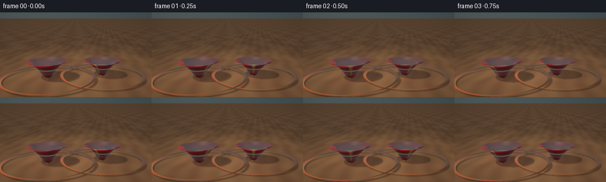
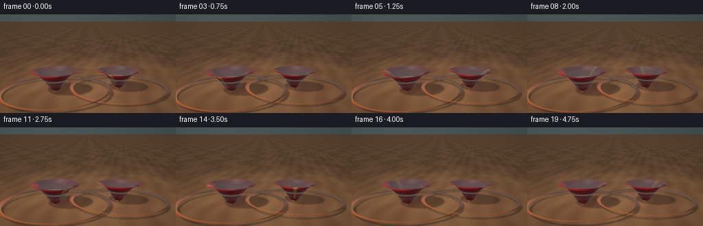

CODING AGENTS AS PIXEL WORLD MODELS
traex/DeepSeek-V4.1-Flash · instance_preservation_0039
点击播放 · 原生 RGB 像素
逐轮保存的候选
回放视频、检查图与代码变化。
每份候选均可单独播放。实际图片检查记录在下方工具轨迹中。
候选 01播放与检查图
点击播放 · 原生 RGB 像素


展开代码变化
--- 上一保存版本
+++ 本次保存版本
@@ -0,0 +1,526 @@
+#!/usr/bin/env python3
+"""Procedurally render two glossy red spinning tops in a small studio."""
+
+from __future__ import annotations
+
+import json
+import math
+import subprocess
+from pathlib import Path
+
+import cv2
+import imageio_ffmpeg
+import numpy as np
+from PIL import Image
+
+import artifact_io
+
+
+ROOT = Path(__file__).resolve().parent
+SPEC = json.loads((ROOT / "task_spec.json").read_text())
+OUT_W = int(SPEC["width"])
+OUT_H = int(SPEC["height"])
+N_FRAMES = int(SPEC["frames"])
+FPS = float(SPEC["fps"])
+
+# Render above the delivery size, then area-downsample for clean toy silhouettes.
+RW, RH = 384, 216
+SHUTTER_SAMPLES = 5
+SHUTTER = 0.062 # seconds, total exposure
+EPS = 1.0e-5
+
+KEY_DIR = np.array([-0.52, 0.84, 0.55], dtype=np.float64)
+KEY_DIR /= np.linalg.norm(KEY_DIR)
+FILL_DIR = np.array([0.62, 0.52, 0.30], dtype=np.float64)
+FILL_DIR /= np.linalg.norm(FILL_DIR)
+RIM_DIR = np.array([0.24, 0.36, -0.90], dtype=np.float64)
+RIM_DIR /= np.linalg.norm(RIM_DIR)
+
+# The outline is a lathe profile in (radius, height). A short brass stem,
+# rounded shoulder and long tapered point make the object read as a toy top.
+PROFILE = np.array(
+ [
+ [0.000, 0.000],
+ [0.018, 0.022],
+ [0.045, 0.055],
+ [0.105, 0.105],
+ [0.195, 0.165],
+ [0.280, 0.235],
+ [0.336, 0.305],
+ [0.356, 0.375],
+ [0.344, 0.440],
+ [0.300, 0.510],
+ [0.240, 0.575],
+ [0.175, 0.630],
+ [0.120, 0.675],
+ [0.080, 0.705],
+ [0.060, 0.725],
+ [0.054, 0.745],
+ [0.050, 0.780],
+ [0.047, 0.815],
+ [0.055, 0.845],
+ [0.060, 0.875],
+ [0.048, 0.905],
+ [0.028, 0.930],
+ [0.012, 0.945],
+ [0.000, 0.950],
+ ],
+ dtype=np.float64,
+)
+PROFILE_Y = PROFILE[:, 1]
+PROFILE_R = PROFILE[:, 0]
+
+TOPS = [
+ {
+ "center": np.array([-0.505, 0.0, 0.085]),
+ "scale": 1.00,
+ "spin0": 0.15,
+ "omega": 2.55,
+ "tilt_phase": 0.20,
+ "tilt_amp": 0.030,
+ "stripe": 0.08,
+ "sector_phase": 0.15,
+ },
+ {
+ "center": np.array([0.505, 0.0, -0.095]),
+ "scale": 0.92,
+ "spin0": 2.20,
+ "omega": -1.95,
+ "tilt_phase": 1.80,
+ "tilt_amp": 0.024,
+ "stripe": 0.10,
+ "sector_phase": -0.35,
+ },
+]
+
+
+def smoothstep(a: float, b: float, x: np.ndarray | float):
+ t = np.clip((x - a) / (b - a), 0.0, 1.0)
+ return t * t * (3.0 - 2.0 * t)
+
+
+def band(x: np.ndarray, center: float, half_width: float, softness: float):
+ return smoothstep(center - half_width - softness, center - half_width, x) * (
+ 1.0 - smoothstep(center + half_width, center + half_width + softness, x)
+ )
+
+
+def normalize(v: np.ndarray):
+ return v / np.maximum(np.linalg.norm(v, axis=-1, keepdims=True), 1.0e-12)
+
+
+def rotation_y(angle: float):
+ c, s = math.cos(angle), math.sin(angle)
+ return np.array([[c, 0.0, s], [0.0, 1.0, 0.0], [-s, 0.0, c]])
+
+
+def rotation_x(angle: float):
+ c, s = math.cos(angle), math.sin(angle)
+ return np.array([[1.0, 0.0, 0.0], [0.0, c, -s], [0.0, s, c]])
+
+
+def rotation_z(angle: float):
+ c, s = math.cos(angle), math.sin(angle)
+ return np.array([[c, -s, 0.0], [s, c, 0.0], [0.0, 0.0, 1.0]])
+
+
+def top_transform(top: dict, time_s: float):
+ phase = top["tilt_phase"]
+ amp = top["tilt_amp"]
+ lean_x = amp * math.sin(0.82 * time_s + phase)
+ lean_z = 0.62 * amp * math.cos(0.67 * time_s + 0.7 * phase)
+ return rotation_z(lean_z) @ rotation_x(lean_x)
+
+
+def profile_radius(y: np.ndarray):
+ return np.interp(y, PROFILE_Y, PROFILE_R)
+
+
+def profile_slope(y: np.ndarray):
+ dy = 0.004
+ y0 = np.clip(y - dy, 0.0, 0.950)
+ y1 = np.clip(y + dy, 0.0, 0.950)
+ return (profile_radius(y1) - profile_radius(y0)) / np.maximum(y1 - y0, 1.0e-8)
+
+
+def intersect_profile(origin_local, direction_local):
+ """Nearest intersection with a union of conical frustums."""
+ n = origin_local.shape[0]
+ best_t = np.full(n, np.inf, dtype=np.float64)
+ ox, oy, oz = origin_local[:, 0], origin_local[:, 1], origin_local[:, 2]
+ dx, dy, dz = direction_local[:, 0], direction_local[:, 1], direction_local[:, 2]
+
+ for index in range(len(PROFILE) - 1):
+ y0, r0 = PROFILE[index]
+ y1, r1 = PROFILE[index + 1]
+ height = y1 - y0
+ if height <= 1.0e-7:
+ continue
+ slope = (r1 - r0) / height
+ q = r0 + slope * (oy - y0)
+ a = dx * dx + dz * dz - (slope * dy) ** 2
+ b = 2.0 * (ox * dx + oz * dz - q * slope * dy)
+ c = ox * ox + oz * oz - q * q
+ disc = b * b - 4.0 * a * c
+
+ linear = np.abs(a) < 1.0e-10
+ with np.errstate(divide="ignore", invalid="ignore"):
+ t_linear = -c / b
+ t_linear = np.where(linear & (np.abs(b) > 1.0e-10), t_linear, np.inf)
+
+ root = np.sqrt(np.maximum(disc, 0.0))
+ with np.errstate(divide="ignore", invalid="ignore"):
+ t0 = (-b - root) / (2.0 * a)
+ t1 = (-b + root) / (2.0 * a)
+ t0 = np.where(~linear & (disc >= 0.0), t0, np.inf)
+ t1 = np.where(~linear & (disc >= 0.0), t1, np.inf)
+ t0 = np.where(linear, t_linear, t0)
+ t1 = np.where(linear, np.inf, t1)
+
+ for candidate in (t0, t1):
+ y_hit = oy + candidate * dy
+ valid = (
+ (candidate > EPS)
+ & (candidate < best_t)
+ & (y_hit >= y0 - 1.0e-6)
+ & (y_hit <= y1 + 1.0e-6)
+ )
+ best_t = np.where(valid, candidate, best_t)
+
+ return best_t
+
+
+def intersect_top(origin, direction, top: dict, time_s: float):
+ rotation = top_transform(top, time_s)
+ scale = top["scale"]
+ local_origin = ((origin - top["center"]) @ rotation) / scale
+ local_direction = (direction @ rotation) / scale
+ t = intersect_profile(local_origin, local_direction)
+ hit = np.isfinite(t)
+
+ local_point = local_origin + t[:, None] * local_direction
+ radius = profile_radius(local_point[:, 1])
+ slope = profile_slope(local_point[:, 1])
+ normal_local = np.stack(
+ [local_point[:, 0], -radius * slope, local_point[:, 2]], axis=1
+ )
+ normal_local = normalize(normal_local)
+ normal_world = normal_local @ rotation.T
+ normal_world = np.where(hit[:, None], normal_world, 0.0)
+ return t, hit, local_point, normal_world
+
+
+def intersect_scene(origin, direction, time_s: float):
+ count = origin.shape[0]
+ t_best = np.full(count, np.inf)
+ top_best = np.full(count, -1, dtype=np.int8)
+ local_best = np.zeros((count, 3))
+ normal_best = np.zeros((count, 3))
+
+ for top_index, top in enumerate(TOPS):
+ t, hit, local_point, normal = intersect_top(origin, direction, top, time_s)
+ closer = hit & (t < t_best)
+ t_best[closer] = t[closer]
+ top_best[closer] = top_index
+ local_best[closer] = local_point[closer]
+ normal_best[closer] = normal[closer]
+ return t_best, top_best, local_best, normal_best
+
+
+def any_top_hit(origin, direction, time_s: float):
+ occluded = np.zeros(origin.shape[0], dtype=bool)
+ for top in TOPS:
+ rotation = top_transform(top, time_s)
+ scale = top["scale"]
+ local_origin = ((origin - top["center"]) @ rotation) / scale
+ local_direction = (direction @ rotation) / scale
+ t = intersect_profile(local_origin, local_direction)
+ occluded |= np.isfinite(t)
+ return occluded
+
+
+def camera_rays(time_s: float, width: int, height: int, jitter=(0.0, 0.0)):
+ camera = np.array(
+ [
+ 0.012 * math.sin(0.33 * time_s),
+ 1.115,
+ 3.56 - 0.018 * math.sin(0.28 * time_s),
+ ]
+ )
+ target = np.array([0.0, 0.455, 0.0])
+ forward = target - camera
+ forward /= np.linalg.norm(forward)
+ right = np.cross(forward, np.array([0.0, 1.0, 0.0]))
+ right /= np.linalg.norm(right)
+ up = np.cross(right, forward)
+
+ yy, xx = np.mgrid[0:height, 0:width].astype(np.float64)
+ sx = ((xx + 0.5 + jitter[0]) / width) * 2.0 - 1.0
+ sy = 1.0 - ((yy + 0.5 + jitter[1]) / height) * 2.0
+ fov = math.radians(24.5)
+ tan_half = math.tan(fov * 0.5)
+ aspect = width / height
+ directions = (
+ forward[None, None, :]
+ + sx[:, :, None] * tan_half * aspect * right[None, None, :]
+ + sy[:, :, None] * tan_half * up[None, None, :]
+ )
+ directions = normalize(directions)
+ origins = np.broadcast_to(camera, directions.shape).copy()
+ return origins.reshape(-1, 3), directions.reshape(-1, 3)
+
+
+def environment(direction):
+ y = np.clip(0.5 + 0.5 * direction[:, 1], 0.0, 1.0)
+ low = np.array([0.010, 0.018, 0.021])
+ high = np.array([0.070, 0.105, 0.108])
+ color = low[None, :] + (high - low)[None, :] * (y[:, None] ** 0.78)
+ glow = np.exp(
+ -(
+ (direction[:, 0] + 0.34) ** 2 / 0.20
+ + (direction[:, 1] - 0.30) ** 2 / 0.10
+ )
+ )
+ color += glow[:, None] * np.array([0.055, 0.060, 0.052])[None, :]
+ return color
+
+
+def build_floor_shadow(time_s: float):
+ origin, direction = camera_rays(time_s, RW, RH)
+ dy = direction[:, 1]
+ t_floor = np.where(dy < -1.0e-7, -origin[:, 1] / dy, np.inf)
+ valid = np.isfinite(t_floor) & (t_floor > EPS)
+ shadow = np.zeros(origin.shape[0], dtype=np.float32)
+ if np.any(valid):
+ points = origin[valid] + t_floor[valid, None] * direction[valid]
+ points[:, 1] = 0.0015
+ shadow[valid] = any_top_hit(points, np.broadcast_to(KEY_DIR, points.shape), time_s)
+ shadow = shadow.reshape(RH, RW)
+ shadow = cv2.GaussianBlur(shadow, (0, 0), 1.15)
+ return shadow
+
+
+def shade_top(local_point, normal, view_direction, top: dict, time_s: float):
+ count = local_point.shape[0]
+ y = local_point[:, 1]
+ spin = top["spin0"] + top["omega"] * time_s
+ angle = np.arctan2(local_point[:, 2], local_point[:, 0]) - spin
+ wrapped = (angle + np.pi) % (2.0 * np.pi) - np.pi
+
+ facet = 0.5 + 0.5 * np.cos(3.0 * angle + top["sector_phase"])
+ red = np.array([0.58, 0.014, 0.018])
+ burgundy = np.array([0.34, 0.006, 0.009])
+ gold = np.array([0.74, 0.39, 0.075])
+ brass = np.array([0.56, 0.30, 0.075])
+ ivory = np.array([0.80, 0.67, 0.42])
+
+ albedo = burgundy[None, :] + (red - burgundy)[None, :] * (
+ 0.35 + 0.65 * facet[:, None]
+ )
+
+ stripe_mask = np.exp(-((wrapped / top["stripe"]) ** 4))
+ stripe_mask *= smoothstep(0.095, 0.13, y) * (1.0 - smoothstep(0.625, 0.665, y))
+ albedo = albedo * (1.0 - 0.92 * stripe_mask[:, None]) + gold[None, :] * (
+ 0.92 * stripe_mask[:, None]
+ )
+
+ ring = band(y, 0.212, 0.009, 0.006) + band(y, 0.682, 0.011, 0.006)
+ ring += 0.75 * band(y, 0.858, 0.008, 0.005)
+ ring = np.clip(ring, 0.0, 1.0)
+ albedo = albedo * (1.0 - ring[:, None]) + ivory[None, :] * ring[:, None]
+
+ tip_mask = 1.0 - smoothstep(0.030, 0.073, y)
+ albedo = albedo * (1.0 - tip_mask[:, None]) + brass[None, :] * tip_mask[:, None]
+ cap_mask = smoothstep(0.895, 0.915, y) * (1.0 - smoothstep(0.944, 0.950, y))
+ albedo = albedo * (1.0 - cap_mask[:, None]) + brass[None, :] * cap_mask[:, None]
+
+ ndotl = np.clip(normal @ KEY_DIR, 0.0, 1.0)
+ ndotf = np.clip(normal @ FILL_DIR, 0.0, 1.0)
+ ndotr = np.clip(normal @ RIM_DIR, 0.0, 1.0)
+ ndotv = np.clip(np.sum(normal * (-view_direction), axis=1), 0.0, 1.0)
+
+ half_key = normalize(KEY_DIR[None, :] + (-view_direction))
+ half_fill = normalize(FILL_DIR[None, :] + (-view_direction))
+ spec_key = np.clip(np.sum(normal * half_key, axis=1), 0.0, 1.0) ** 72.0
+ spec_fill = np.clip(np.sum(normal * half_fill, axis=1), 0.0, 1.0) ** 42.0
+ gloss = 0.35 + 0.65 * (1.0 - smoothstep(0.03, 0.09, y))
+ specular = (
+ spec_key * gloss * 1.55 + spec_fill * gloss * 0.38
+ )[:, None] * np.array([1.0, 0.91, 0.76])[None, :]
+
+ ao = 0.64 + 0.36 * smoothstep(0.0, 0.17, y)
+ ambient = np.array([0.095, 0.120, 0.128])
+ key = np.array([1.00, 0.83, 0.66])
+ fill = np.array([0.42, 0.58, 0.72])
+ rim = np.array([0.60, 0.68, 0.70])
+ color = albedo * (
+ ambient[None, :] * ao[:, None]
+ + key[None, :] * (1.42 * ndotl[:, None])
+ + fill[None, :] * (0.38 * ndotf[:, None])
+ + rim[None, :] * (0.18 * ndotr[:, None])
+ )
+ color += specular
+
+ fresnel = 0.035 + 0.965 * (1.0 - ndotv) ** 5
+ reflection = normalize(
+ view_direction - 2.0 * np.sum(view_direction * normal, axis=1)[:, None] * normal
+ )
+ color += environment(reflection) * (0.62 * fresnel)[:, None]
+ return color
+
+
+def shade_floor(points, pixel_indices, view_direction, shadow_map, time_s: float):
+ x, z = points[:, 0], points[:, 2]
+ grain = 0.5 + 0.5 * np.sin(
+ 4.4 * x + 1.35 * np.sin(2.1 * z + 0.6) + 0.34 * np.sin(8.8 * z)
+ )
+ fine = 0.5 + 0.5 * np.sin(18.0 * x + 2.7 * z + 0.8 * np.sin(5.1 * z))
+ wood_dark = np.array([0.145, 0.071, 0.034])
+ wood_light = np.array([0.230, 0.119, 0.055])
+ albedo = wood_dark[None, :] + (wood_light - wood_dark)[None, :] * (
+ 0.60 * grain[:, None] + 0.40 * fine[:, None]
+ )
+
+ # The shadow map was generated in the same camera raster order.
+ shadow = shadow_map.reshape(-1)[pixel_indices]
+ pool = np.exp(-(x * x / 5.6 + (z + 0.12) ** 2 / 7.0))
+ ndotl = max(float(KEY_DIR[1]), 0.0)
+ ndotf = max(float(FILL_DIR[1]), 0.0)
+ key = np.array([1.0, 0.80, 0.60])
+ fill = np.array([0.36, 0.50, 0.62])
+ color = albedo * (
+ np.array([0.12, 0.15, 0.16])[None, :]
+ + key[None, :] * ((0.38 + 0.92 * pool) * (1.0 - 0.74 * shadow))[:, None] * ndotl
+ + fill[None, :] * (0.22 * (0.55 + 0.45 * pool))[:, None] * ndotf
+ )
+
+ for top in TOPS:
+ dx = x - top["center"][0]
+ dz = z - top["center"][2]
+ bounce = np.exp(-(dx * dx + dz * dz) / 0.18)
+ color += bounce[:, None] * np.array([0.026, 0.0025, 0.0020])[None, :]
+
+ fresnel = 0.025 + 0.975 * np.clip(1.0 - np.abs(view_direction[:, 1]), 0.0, 1.0) ** 5
+ reflection = view_direction.copy()
+ reflection[:, 1] *= -1.0
+ color += environment(reflection) * (0.055 * fresnel)[:, None]
+ return color
+
+
+def render_subframe(time_s: float, shadow_map, jitter):
+ origin, direction = camera_rays(time_s, RW, RH, jitter)
+ count = origin.shape[0]
+ color = environment(direction)
+
+ dy = direction[:, 1]
+ t_floor = np.where(dy < -1.0e-7, -origin[:, 1] / dy, np.inf)
+ floor_hit = np.isfinite(t_floor) & (t_floor > EPS)
+ floor_points = origin + t_floor[:, None] * direction
+
+ t_top, top_id, local_point, normal = intersect_scene(origin, direction, time_s)
+ top_hit = top_id >= 0
+ top_closer = top_hit & ((~floor_hit) | (t_top < t_floor))
+
+ if np.any(floor_hit & ~top_closer):
+ floor_mask = floor_hit & ~top_closer
+ floor_indices = np.flatnonzero(floor_mask)
+ floor_color = shade_floor(
+ floor_points[floor_mask],
+ floor_indices,
+ direction[floor_mask],
+ shadow_map,
+ time_s,
+ )
+ color[floor_mask] = floor_color
+
+ if np.any(top_closer):
+ top_mask = top_closer
+ for top_index, top in enumerate(TOPS):
+ mask = top_mask & (top_id == top_index)
+ if np.any(mask):
+ color[mask] = shade_top(
+ local_point[mask], normal[mask], direction[mask], top, time_s
+ )
+
+ return color.reshape(RH, RW, 3)
+
+
+def tonemap(linear):
+ mapped = 1.0 - np.exp(-np.maximum(linear, 0.0) * 1.22)
+ return np.clip(mapped, 0.0, 1.0) ** (1.0 / 2.2)
+
+
+def finish_frame(linear):
+ linear = cv2.resize(linear, (OUT_W, OUT_H), interpolation=cv2.INTER_AREA)
+ highlights = np.maximum(linear - 0.62, 0.0)
+ bloom = cv2.GaussianBlur(highlights, (0, 0), 1.25)
+ linear = linear + bloom * 0.16
+ yy, xx = np.mgrid[0:OUT_H, 0:OUT_W]
+ nx = (xx - (OUT_W - 1) * 0.5) / (OUT_W * 0.5)
+ ny = (yy - (OUT_H - 1) * 0.5) / (OUT_H * 0.5)
+ vignette = 1.0 - 0.13 * np.clip(nx * nx + ny * ny, 0.0, 1.8) ** 1.25
+ linear *= vignette[:, :, None]
+ return np.round(tonemap(linear) * 255.0).astype(np.uint8)
+
+
+def render_video():
+ frames = []
+ halton_x = [0.17, 0.67, 0.39, 0.89, 0.27]
+ halton_y = [0.31, 0.81, 0.13, 0.57, 0.93]
+ for frame_index in range(N_FRAMES):
+ time_s = frame_index / FPS
+ shadow_map = build_floor_shadow(time_s)
+ accumulated = np.zeros((RH, RW, 3), dtype=np.float64)
+ for sample in range(SHUTTER_SAMPLES):
+ u = sample / (SHUTTER_SAMPLES - 1)
+ exposure_time = time_s + (u - 0.5) * SHUTTER
+ jitter = (halton_x[sample] - 0.5, halton_y[sample] - 0.5)
+ accumulated += render_subframe(exposure_time, shadow_map, jitter)
+ frame = finish_frame(accumulated / SHUTTER_SAMPLES)
+ frames.append(frame)
+ print(f"rendered frame {frame_index + 1:02d}/{N_FRAMES}", flush=True)
+ return np.stack(frames)
+
+
+def encode_mp4(frames):
+ ffmpeg = imageio_ffmpeg.get_ffmpeg_exe()
+ command = [
+ ffmpeg,
+ "-y",
+ "-loglevel",
+ "error",
+ "-f",
+ "rawvideo",
+ "-pix_fmt",
+ "rgb24",
+ "-s",
+ f"{OUT_W}x{OUT_H}",
+ "-r",
+ f"{FPS:g}",
+ "-i",
+ "-",
+ "-an",
+ "-c:v",
+ "libx264",
+ "-preset",
+ "slow",
+ "-crf",
+ "16",
+ "-pix_fmt",
+ "yuv420p",
+ "-movflags",
+ "+faststart",
+ str(ROOT / "video.mp4"),
+ ]
+ subprocess.run(command, input=np.ascontiguousarray(frames).tobytes(), check=True)
+
+
+def main():
+ frames = render_video()
+ artifact_io.save(frames, ROOT)
+ encode_mp4(frames)
+ print(f"saved {len(frames)} frames, {OUT_W}x{OUT_H} at {FPS:g} fps")
+
+
+if __name__ == "__main__":
+ main()
候选 02播放与检查图
点击播放 · 原生 RGB 像素

展开代码变化
--- 上一保存版本
+++ 本次保存版本
@@ -106,7 +106,8 @@
def normalize(v: np.ndarray):
- return v / np.maximum(np.linalg.norm(v, axis=-1, keepdims=True), 1.0e-12)
+ length = np.linalg.norm(v, axis=-1, keepdims=True)
+ return v / np.maximum(length, 1.0e-12)
def rotation_y(angle: float):
@@ -151,40 +152,44 @@
dx, dy, dz = direction_local[:, 0], direction_local[:, 1], direction_local[:, 2]
for index in range(len(PROFILE) - 1):
- y0, r0 = PROFILE[index]
- y1, r1 = PROFILE[index + 1]
- height = y1 - y0
+ r0, y0 = PROFILE[index]
+ r1, y1 = PROFILE[index + 1]
+ height = abs(y1 - y0)
if height <= 1.0e-7:
continue
- slope = (r1 - r0) / height
+ slope = (r1 - r0) / (y1 - y0)
q = r0 + slope * (oy - y0)
+ # Implicit surface: x^2 + z^2 - (r0 + slope * (y-y0))^2 = 0.
+ # Using the exact quadratic below keeps steep, nearly vertical profile
+ # sections from producing spurious grazing intersections.
a = dx * dx + dz * dz - (slope * dy) ** 2
b = 2.0 * (ox * dx + oz * dz - q * slope * dy)
c = ox * ox + oz * oz - q * q
disc = b * b - 4.0 * a * c
-
- linear = np.abs(a) < 1.0e-10
+ root = np.sqrt(np.maximum(disc, 0.0))
+ denominator = 2.0 * a
+ stable = np.abs(denominator) > 1.0e-10
with np.errstate(divide="ignore", invalid="ignore"):
- t_linear = -c / b
- t_linear = np.where(linear & (np.abs(b) > 1.0e-10), t_linear, np.inf)
-
- root = np.sqrt(np.maximum(disc, 0.0))
- with np.errstate(divide="ignore", invalid="ignore"):
- t0 = (-b - root) / (2.0 * a)
- t1 = (-b + root) / (2.0 * a)
- t0 = np.where(~linear & (disc >= 0.0), t0, np.inf)
- t1 = np.where(~linear & (disc >= 0.0), t1, np.inf)
- t0 = np.where(linear, t_linear, t0)
- t1 = np.where(linear, np.inf, t1)
-
- for candidate in (t0, t1):
- y_hit = oy + candidate * dy
- valid = (
- (candidate > EPS)
- & (candidate < best_t)
- & (y_hit >= y0 - 1.0e-6)
- & (y_hit <= y1 + 1.0e-6)
- )
+ t0 = (-b - root) / denominator
+ t1 = (-b + root) / denominator
+ t0 = np.where(stable & (disc >= 0.0), t0, np.inf)
+ t1 = np.where(stable & (disc >= 0.0), t1, np.inf)
+ near_root = np.minimum(t0, t1)
+ far_root = np.maximum(t0, t1)
+
+ for candidate in (near_root, far_root):
+ finite = np.isfinite(candidate)
+ safe_t = np.where(finite, candidate, 0.0)
+ y_hit = oy + safe_t * dy
+ # Intersections exactly on shared profile rings must be included,
+ # but only once; the clamp avoids seams between adjacent frustums.
+ valid = finite & (candidate > EPS) & (candidate < best_t)
+ valid &= (y_hit >= min(y0, y1) - 2.0e-5)
+ valid &= (y_hit <= max(y0, y1) + 2.0e-5)
+ radial_hit = np.hypot(ox + safe_t * dx, oz + safe_t * dz)
+ target_radius = r0 + slope * (y_hit - y0)
+ valid &= target_radius >= -2.0e-4
+ valid &= np.abs(radial_hit - target_radius) <= 2.0e-4
best_t = np.where(valid, candidate, best_t)
return best_t
@@ -242,9 +247,9 @@
def camera_rays(time_s: float, width: int, height: int, jitter=(0.0, 0.0)):
camera = np.array(
[
- 0.012 * math.sin(0.33 * time_s),
- 1.115,
- 3.56 - 0.018 * math.sin(0.28 * time_s),
+ 0.010 * math.sin(0.33 * time_s),
+ 0.980,
+ 3.64 - 0.016 * math.sin(0.28 * time_s),
]
)
target = np.array([0.0, 0.455, 0.0])
@@ -257,7 +262,7 @@
yy, xx = np.mgrid[0:height, 0:width].astype(np.float64)
sx = ((xx + 0.5 + jitter[0]) / width) * 2.0 - 1.0
sy = 1.0 - ((yy + 0.5 + jitter[1]) / height) * 2.0
- fov = math.radians(24.5)
+ fov = math.radians(26.0)
tan_half = math.tan(fov * 0.5)
aspect = width / height
directions = (
@@ -272,8 +277,8 @@
def environment(direction):
y = np.clip(0.5 + 0.5 * direction[:, 1], 0.0, 1.0)
- low = np.array([0.010, 0.018, 0.021])
- high = np.array([0.070, 0.105, 0.108])
+ low = np.array([0.004, 0.009, 0.013])
+ high = np.array([0.021, 0.037, 0.047])
color = low[None, :] + (high - low)[None, :] * (y[:, None] ** 0.78)
glow = np.exp(
-(
@@ -281,7 +286,7 @@
+ (direction[:, 1] - 0.30) ** 2 / 0.10
)
)
- color += glow[:, None] * np.array([0.055, 0.060, 0.052])[None, :]
+ color += glow[:, None] * np.array([0.030, 0.036, 0.034])[None, :]
return color
@@ -308,11 +313,11 @@
wrapped = (angle + np.pi) % (2.0 * np.pi) - np.pi
facet = 0.5 + 0.5 * np.cos(3.0 * angle + top["sector_phase"])
- red = np.array([0.58, 0.014, 0.018])
- burgundy = np.array([0.34, 0.006, 0.009])
- gold = np.array([0.74, 0.39, 0.075])
- brass = np.array([0.56, 0.30, 0.075])
- ivory = np.array([0.80, 0.67, 0.42])
+ red = np.array([0.63, 0.010, 0.014])
+ burgundy = np.array([0.29, 0.004, 0.006])
+ gold = np.array([0.76, 0.39, 0.060])
+ brass = np.array([0.54, 0.27, 0.055])
+ ivory = np.array([0.74, 0.62, 0.36])
albedo = burgundy[None, :] + (red - burgundy)[None, :] * (
0.35 + 0.65 * facet[:, None]
@@ -329,7 +334,7 @@
ring = np.clip(ring, 0.0, 1.0)
albedo = albedo * (1.0 - ring[:, None]) + ivory[None, :] * ring[:, None]
- tip_mask = 1.0 - smoothstep(0.030, 0.073, y)
+ tip_mask = 1.0 - smoothstep(0.018, 0.058, y)
albedo = albedo * (1.0 - tip_mask[:, None]) + brass[None, :] * tip_mask[:, None]
cap_mask = smoothstep(0.895, 0.915, y) * (1.0 - smoothstep(0.944, 0.950, y))
albedo = albedo * (1.0 - cap_mask[:, None]) + brass[None, :] * cap_mask[:, None]
@@ -348,15 +353,15 @@
spec_key * gloss * 1.55 + spec_fill * gloss * 0.38
)[:, None] * np.array([1.0, 0.91, 0.76])[None, :]
- ao = 0.64 + 0.36 * smoothstep(0.0, 0.17, y)
- ambient = np.array([0.095, 0.120, 0.128])
+ ao = 0.68 + 0.32 * smoothstep(0.0, 0.17, y)
+ ambient = np.array([0.050, 0.069, 0.079])
key = np.array([1.00, 0.83, 0.66])
fill = np.array([0.42, 0.58, 0.72])
rim = np.array([0.60, 0.68, 0.70])
color = albedo * (
ambient[None, :] * ao[:, None]
- + key[None, :] * (1.42 * ndotl[:, None])
- + fill[None, :] * (0.38 * ndotf[:, None])
+ + key[None, :] * (1.55 * ndotl[:, None])
+ + fill[None, :] * (0.30 * ndotf[:, None])
+ rim[None, :] * (0.18 * ndotr[:, None])
)
color += specular
@@ -375,8 +380,8 @@
4.4 * x + 1.35 * np.sin(2.1 * z + 0.6) + 0.34 * np.sin(8.8 * z)
)
fine = 0.5 + 0.5 * np.sin(18.0 * x + 2.7 * z + 0.8 * np.sin(5.1 * z))
- wood_dark = np.array([0.145, 0.071, 0.034])
- wood_light = np.array([0.230, 0.119, 0.055])
+ wood_dark = np.array([0.034, 0.028, 0.024])
+ wood_light = np.array([0.066, 0.051, 0.039])
albedo = wood_dark[None, :] + (wood_light - wood_dark)[None, :] * (
0.60 * grain[:, None] + 0.40 * fine[:, None]
)
@@ -386,19 +391,19 @@
pool = np.exp(-(x * x / 5.6 + (z + 0.12) ** 2 / 7.0))
ndotl = max(float(KEY_DIR[1]), 0.0)
ndotf = max(float(FILL_DIR[1]), 0.0)
- key = np.array([1.0, 0.80, 0.60])
- fill = np.array([0.36, 0.50, 0.62])
+ key = np.array([1.0, 0.84, 0.67])
+ fill = np.array([0.32, 0.43, 0.50])
color = albedo * (
- np.array([0.12, 0.15, 0.16])[None, :]
- + key[None, :] * ((0.38 + 0.92 * pool) * (1.0 - 0.74 * shadow))[:, None] * ndotl
- + fill[None, :] * (0.22 * (0.55 + 0.45 * pool))[:, None] * ndotf
+ np.array([0.075, 0.095, 0.105])[None, :]
+ + key[None, :] * ((0.34 + 0.88 * pool) * (1.0 - 0.78 * shadow))[:, None] * ndotl
+ + fill[None, :] * (0.18 * (0.55 + 0.45 * pool))[:, None] * ndotf
)
for top in TOPS:
dx = x - top["center"][0]
dz = z - top["center"][2]
bounce = np.exp(-(dx * dx + dz * dz) / 0.18)
- color += bounce[:, None] * np.array([0.026, 0.0025, 0.0020])[None, :]
+ color += bounce[:, None] * np.array([0.018, 0.0015, 0.0012])[None, :]
fresnel = 0.025 + 0.975 * np.clip(1.0 - np.abs(view_direction[:, 1]), 0.0, 1.0) ** 5
reflection = view_direction.copy()
候选 03播放与检查图
可观测工具轨迹
实际执行的命令与返回图片。
命令 1exit 0
/bin/bash -c "pwd && rg --files -g '"'!*.git*'"' | sed -n '1,160p'"
命令 2exit 0
/bin/bash -c 'cat prompt.txt'
命令 3exit 0
/bin/bash -c 'cat task_spec.json'
命令 4exit 0
/bin/bash -c 'cat GENERATION_RULES.md'
命令 5exit 0
/bin/bash -c 'ls -la && git status --short'
命令 6exit 0
/bin/bash -c "sed -n '1,240p' artifact_io.py"
命令 7exit 0
/bin/bash -c "command -v ffmpeg || true; command -v chafa || true; command -v viu || true; command -v jp2 || true; python - <<'PY'
import numpy, PIL
print('numpy', numpy.__version__, 'PIL', PIL.__version__)
PY"命令 8exit 0
/bin/bash -c "command -v img2txt || true; command -v viu || true; command -v jp2 || true; command -v timg || true; command -v ffplay || true; python - <<'PY'
mods=['imageio','imageio_ffmpeg','cv2','scipy','matplotlib']
for m in mods:
try:
x=__import__(m); print(m, getattr(x,'__version__','ok'))
except Exception as e: print(m, 'missing')
PY"命令 9exit 0
/bin/bash -c "python - <<'PY'
from PIL import Image
im=Image.open('player_template.html') if False else None
print(open('player_template.html').read()[:2000])
PY"命令 10exit 0
/bin/bash -c 'python generate.py'
命令 11exit 0
/bin/bash -c "python - <<'PY'
from PIL import Image
im=Image.open('inspection.png')
im.resize((im.width*2, im.height*2), Image.Resampling.NEAREST).save('.tmp/inspection_2x.png')
print(im.size)
PY"命令 12exit 0
/bin/bash -c "python - <<'PY'
import numpy as np
from PIL import Image
for fn in ['frames/00.png','frames/10.png','frames/19.png']:
a=np.array(Image.open(fn).convert('RGB')).astype(float)
h,w,_=a.shape
# 2x2 average -> 72 rows; use 4x4 for 36 rows
a=a[:144,:256]
small=a.reshape(36,4,64,4,3).mean((1,3))
print('\\n',fn)
for row in small:
s=''
for r,g,b in row:
lum=(.2126*r+.7152*g+.0722*b)
sat=(max(r,g,b)-min(r,g,b))/(max(r,g,b)+1)
if sat>.35 and r>g*1.55 and r>b*1.35:
s += '@' if lum>110 else 'R'
elif sat>.25 and r>b*1.35 and g>b*1.25:
s += 'g' if lum>100 else '+'
elif lum<18: s += ' '
elif lum<32: s += '.'
elif lum<50: s += ':'
elif lum<75: s += '-'
elif lum<100: s += '='
else: s += '#'
print(s)
PY"命令 13exit 0
/bin/bash -c "python - <<'PY'
from PIL import Image
import numpy as np
for fi in [0,10,19]:
a=np.array(Image.open(f'frames/{fi:02d}.png'))
print('\\nframe',fi,'minmax',a.min((0,1)),a.max((0,1)),'mean',a.mean((0,1)).round(1))
for y,x in [(0,0),(20,0),(50,0),(80,0),(120,0),(143,0),(0,128),(20,128),(50,128),(70,128),(90,128),(110,128),(130,128),(143,128),(0,255),(20,255),(50,255),(80,255),(120,255)]: print((y,x),a[y,x],end='; ')
print()
# saturation histogram
mx=a.max(2); mn=a.min(2); sat=(mx-mn)/(mx+1)
print('sat quantiles',np.quantile(sat,[.1,.25,.5,.75,.9,.95,.99]).round(2),'lum',np.quantile(mx,[.1,.25,.5,.75,.9,.95,.99]))
PY"命令 14exit 0
/bin/bash -c "python - <<'PY'
from PIL import Image
import numpy as np
from scipy import ndimage
for fi in range(20):
a=np.array(Image.open(f'frames/{fi:02d}.png')).astype(float)
r,g,b=a.transpose(2,0,1)
m=(r>g*1.55)&(r>b*1.35)&(r>60)&(np.max(a,2)-np.min(a,2)>35)
lab,n=ndimage.label(m)
out=[]
for i in range(1,n+1):
ys,xs=np.where(lab==i)
if len(xs)>12: out.append((len(xs),(xs.min(),ys.min(),xs.max(),ys.max())))
print(fi, sorted(out,reverse=True)[:6])
PY"命令 15exit 0
/bin/bash -c "python - <<'PY'
from PIL import Image
import numpy as np
for fi in [0,1,2,3,4]:
a=np.array(Image.open(f'frames/{fi:02d}.png'))
# zoom center region 60:196, 60:136 as sixel unavailable; save crop enlarged
Image.fromarray(a[68:138,32:200]).resize((1008,420),Image.Resampling.NEAREST).save(f'.tmp/crop{fi}.png')
print(fi, 'row125', a[125, 80:176:4].tolist())
PY"命令 16exit 0
/bin/bash -c "python - <<'PY' import generate as g, numpy as np cam=np.array([0,.1,3.56]); target=np.array([0,.455,0]); f=target-cam; f/=np.linalg.norm(f); r=np.cross(f,[0,1,0]); r/=np.linalg.norm(r); u=np.cross(r,f) for p in [np.array([-.505,0,.085]),np.array([-.505,.95,.085]),np.array([-.505,.45,.085]),np.array([.505,0,-.095]),np.array([.505,.92,-.095])]: d=p-cam; z=d@f; sx=(d@r)/(z*.217*384/216); sy=(d@u)/(z*.217) print(p, 'depth',z,'px', (sx+1)*192,(1-sy)*108) PY"
命令 17exit 0
/bin/bash -c "python - <<'PY'
from PIL import Image
import numpy as np
for fi in [0,10]:
a=np.array(Image.open(f'frames/{fi:02d}.png')).astype(int)
print('frame',fi)
for y in range(70,140,4):
print(f'{y:3}', ''.join('R' if (p[0]>p[1]*1.55 and p[0]>p[2]*1.35 and p[0]>70) else '#' if max(p)>140 else '+' if max(p)>100 else '.' if max(p)>60 else ' ' for p in a[y,20:236:2]))
PY"命令 18exit 0
/bin/bash -c "python - <<'PY'
from PIL import Image
import numpy as np, colorsys
for fi in [0]:
a=np.array(Image.open(f'frames/{fi:02d}.png')).astype(float)
print('LEFT TOP')
for y in range(18,122,2):
line=''
for x in range(50,110,2):
p=a[y:y+2,x:x+2].mean((0,1))/255
h,s,v=colorsys.rgb_to_hsv(*p)
if s>.38 and (h<.055 or h>.94): c='@' if v>.5 else 'R' if v>.28 else 'r'
elif s>.42 and .055<=h<.16: c='O' if v>.45 else 'o'
elif v>.6: c='#'
elif v>.4: c='+'
elif v>.25: c='.'
elif v>.12: c=','
else: c=' '
line+=c
print(f'{y:3} {line}')
PY"命令 19exit 0
/bin/bash -c "python - <<'PY'
from PIL import Image
import numpy as np
for fi in [0]:
a=np.array(Image.open(f'frames/{fi:02d}.png')).astype(int)
# Print R channel heatmap normalized around center crop. chars by luminance
for y in range(20,130,2):
print(f'{y:3}', ''.join(' ' if a[y,x].max()<25 else '.' if a[y,x].max()<45 else ':' if a[y,x].max()<70 else '-' if a[y,x].max()<95 else '=' if a[y,x].max()<125 else '+' if a[y,x].max()<160 else '#' for x in range(44,212,2)))
PY"命令 20exit 0
/bin/bash -c "python - <<'PY'
import generate as g, numpy as np
# screen projection of body points with current camera helper
orig,dirs=g.camera_rays(0,384,216)
# reconstruct grid dirs per pix and intersect
t,idx,loc,norm=g.intersect_scene(orig,dirs,0)
ys,xs=np.divmod(np.flatnonzero(idx>=0),384)
print('hits',len(xs),'bounds',xs.min(),xs.max(),ys.min(),ys.max())
for label,sel in [('left',xs<192),('right',xs>=192)]:
print(label,'n',sel.sum(),'bounds',xs[sel].min(),xs[sel].max(),ys[sel].min(),ys[sel].max())
# x ranges by 10 y
for y0 in range(0,216,10):
s=sel&(ys>=y0)&(ys<y0+10)
if s.any(): print(y0, xs[s].min(),xs[s].max())
PY"命令 21exit 1
/bin/bash -c "python - <<'PY' import generate as g, numpy as np orig,dirs=g.camera_rays(0,384,216) t,idx,loc,norm=g.intersect_scene(orig,dirs,0) ys,xs=np.divmod(np.flatnonzero(idx>=0),384) for ti in [0,1]: sel=idx>=0 # calculate world hits and project to verify top index according to actual visible screen hits=orig+np.where(np.isfinite(t)[:,None],t[:,None]*dirs,0) mask=(idx==ti) # nearest camera? x distribution print(ti, 'pixel x', np.quantile(xs[mask],[0,.05,.5,.95,1]), 'pixel y',np.quantile(ys[mask],[0,.05,.5,.95,1]),'world x', np.quantile(hits[mask,0],[0,.05,.5,.95,1]),'z',np.quantile(hits[mask,2],[0,.05,.5,.95,1])) PY"
命令 22exit 0
/bin/bash -c "python - <<'PY' import generate as g, numpy as np orig,dirs=g.camera_rays(0,384,216) t,idx,loc,norm=g.intersect_scene(orig,dirs,0) hit=idx>=0 ys,xs=np.divmod(np.flatnonzero(hit),384) hits=orig[hit]+t[hit,None]*dirs[hit] for ti in [0,1]: mask=idx[hit]==ti print(ti, 'pixel x', np.quantile(xs[mask],[0,.05,.5,.95,1]).round(1), 'pixel y',np.quantile(ys[mask],[0,.05,.5,.95,1]).round(1),'world x', np.quantile(hits[mask,0],[0,.05,.5,.95,1]).round(2),'z',np.quantile(hits[mask,2],[0,.05,.5,.95,1]).round(2)) PY"
命令 23exit 0
/bin/bash -c "python - <<'PY'
import generate as g, numpy as np
orig,dirs=g.camera_rays(0,384,216)
# Test exact center pixel ray
for xy in [(120,140),(260,140),(120,100),(120,200),(260,200)]:
x,y=xy; i=y*384+x
o=orig[i:i+1]; d=dirs[i:i+1]
print('\\npixel',xy,'ray',d)
for ti,top in enumerate(g.TOPS):
rot=g.top_transform(top,0); sc=top['scale']; lo=((o-top['center'])@rot)/sc; ld=(d@rot)/sc
tt=g.intersect_profile(lo,ld)
print(' top',ti,'localo',lo,'locald',ld,'t',tt)
if np.isfinite(tt[0]):
lp=lo+tt[:,None]*ld; yv=lp[0,1]; r=g.profile_radius(np.array([yv]))[0]; sl=g.profile_slope(np.array([yv]))[0]
print(' local hit',lp,'radius',r,'slope',sl)
PY"命令 24exit 0
/bin/bash -c "python - <<'PY'
import generate as g, numpy as np
orig,dirs=g.camera_rays(0,384,216)
for xy in [(0,210),(10,210),(100,210),(383,190),(200,210)]:
x,y=xy; i=y*384+x;o=orig[i:i+1];d=dirs[i:i+1]
print('\\npixel',xy,'ray',d)
for ti,top in enumerate(g.TOPS):
rot=g.top_transform(top,0); sc=top['scale']; lo=((o-top['center'])@rot)/sc; ld=(d@rot)/sc
tt=g.intersect_profile(lo,ld)
print(' top',ti,'t',tt)
if np.isfinite(tt[0]):
lp=lo+tt[:,None]*ld
print(' local hit',lp,'world',o+tt[:,None]*d)
PY"命令 25exit 0
/bin/bash -c "python - <<'PY'
import generate as g, numpy as np
orig,dirs=g.camera_rays(0,384,216)
t,idx,loc,norm=g.intersect_scene(orig,dirs,0)
ys,xs=np.divmod(np.arange(len(idx)),384)
for ti in [0,1]:
m=(idx==ti)&(xs>192 if ti==0 else xs<192)
print(ti, m.sum(), list(zip(xs[m][:30],ys[m][:30])))
print('t range',np.quantile(t[m],[0,.1,.5,.9,1]))
PY"命令 26exit 0
/bin/bash -c "python - <<'PY'
import generate as g, numpy as np
orig,dirs=g.camera_rays(0,384,216)
t,idx,loc,norm=g.intersect_scene(orig,dirs,0)
ys,xs=np.divmod(np.arange(len(idx)),384)
for ti in [0,1]:
print('top',ti)
for y0 in range(100,211,5):
m=(idx==ti)&(ys>=y0)&(ys<y0+5)
if m.any(): print(y0, xs[m].min(),xs[m].max(), 'count',m.sum())
PY"命令 27exit 0
/bin/bash -c "python - <<'PY' import generate as g, numpy as np for xy in [(108,110),(108,111),(108,112),(108,114),(151,110),(66,125),(67,125),(170,125)]: x,y=xy;i=y*384+x;o,dirs=g.camera_rays(0,384,216);o=o[i:i+1];d=dirs[i:i+1] print(xy) for ti,top in enumerate(g.TOPS): rot=g.top_transform(top,0);sc=top['scale'];lo=((o-top['center'])@rot)/sc;ld=(d@rot)/sc t=g.intersect_profile(lo,ld) if np.isfinite(t[0]): lp=lo+t[:,None]*ld print(ti,t[0], 'y',lp[0,1], 'r',np.hypot(lp[0,0],lp[0,2]),'profile r',g.profile_radius(np.array([lp[0,1]]))[0], 'local',lp[0]) PY"
命令 28exit 0
/bin/bash -c "python - <<'PY' import generate as g, numpy as np orig,dirs=g.camera_rays(0,384,216) for p in [(192,108),(190,108),(0,108),(383,108)]: x,y=p;i=y*384+x;o=orig[i:i+1];d=dirs[i:i+1] print(p, d) for ti,top in enumerate(g.TOPS): rot=g.top_transform(top,0);sc=top['scale'];lo=((o-top['center'])@rot)/sc;ld=(d@rot)/sc t=g.intersect_profile(lo,ld) print(ti,t) PY"
命令 29exit 0
/bin/bash -c "python - <<'PY'
import generate as g, numpy as np
orig,dirs=g.camera_rays(0,384,216)
t,idx,loc,norm=g.intersect_scene(orig,dirs,0)
ys,xs=np.divmod(np.arange(len(idx)),384)
for ti in [0,1]:
print('top',ti,'y',ys[idx==ti].min(),ys[idx==ti].max(), 'x',xs[idx==ti].min(),xs[idx==ti].max())
# screen points at top y .95 and base with projection current
cam=np.array([0,1.115,3.56]); target=np.array([0,.455,0]);f=target-cam;f/=np.linalg.norm(f);r=np.cross(f,[0,1,0]);r/=np.linalg.norm(r);u=np.cross(r,f)
for p in [np.array([-.505,0,.085]),np.array([-.505,.95,.085]),np.array([.505,0,-.095]),np.array([.505,.874,-.095])]:
d=p-cam;z=d@f;sx=(d@r)/(z*.217*384/216);sy=(d@u)/(z*.217)
print(p, 'px',(sx+1)*192,(1-sy)*108)
PY"命令 30exit 1
/bin/bash -c "python - <<'PY' import generate as g, numpy as np orig,dirs=g.camera_rays(0,384,216) for y in [100,105,108,110,112,114]: m=np.any(np.isfinite(g.intersect_scene(orig.reshape(216,384,3)[y],dirs.reshape(216,384,3)[y],0)[0]),axis=1) xs=np.flatnonzero(m) print(y, xs.min() if len(xs) else None, xs.max() if len(xs) else None, xs[:10], xs[-10:] if len(xs) else []) PY"
命令 31exit 0
/bin/bash -c "python - <<'PY' import generate as g, numpy as np orig,dirs=g.camera_rays(0,384,216) for y in [100,105,108,110,112,114,120,140,180,210]: o=orig.reshape(216,384,3)[y];d=dirs.reshape(216,384,3)[y] t,idx,loc,norm=g.intersect_scene(o,d,0) xs=np.flatnonzero(idx>=0) print(y, xs.min() if len(xs) else None, xs.max() if len(xs) else None, xs[:10], xs[-10:] if len(xs) else []) PY"
命令 32exit 0
/bin/bash -c "python - <<'PY'
import generate as g, numpy as np
orig,dirs=g.camera_rays(0,384,216)
t,idx,loc,norm=g.intersect_scene(orig,dirs,0)
for ti in [0,1]:
m=idx==ti
print('top',ti,'y',loc[m,1].min(),loc[m,1].max(),'rad',np.hypot(loc[m,0],loc[m,2]).min(),np.hypot(loc[m,0],loc[m,2]).max())
print('normals y',norm[m,1].min(),norm[m,1].max())
PY"命令 33exit 0
/bin/bash -c "python - <<'PY'
import generate as g, numpy as np
orig,dirs=g.camera_rays(0,384,216)
t,idx,loc,norm=g.intersect_scene(orig,dirs,0)
m=idx==0
i=np.flatnonzero(m & (np.hypot(loc[:,0],loc[:,2])>.5))[0]
print('i',i,'pix',divmod(i,384),'local',loc[i],'t',t[i],'normal',norm[i])
top=g.TOPS[0];rot=g.top_transform(top,0);sc=top['scale'];lo=((orig[i]-top['center'])@rot)/sc;ld=(dirs[i]@rot)/sc
print('lo',lo,'ld',ld,'r',np.hypot(loc[i,0],loc[i,2]),'prof',g.profile_radius(loc[i,1:2]))
print('all segment roots:')
for j in range(len(g.PROFILE)-1):
y0,r0=g.PROFILE[j];y1,r1=g.PROFILE[j+1];h=y1-y0;sl=(r1-r0)/h;q=r0+sl*(lo[1]-y0)
a=ld[0]**2+ld[2]**2-(sl*ld[1])**2;b=2*(lo[0]*ld[0]+lo[2]*ld[2]-q*sl*ld[1]);c=lo[0]**2+lo[2]**2-q*q;disc=b*b-4*a*c
if disc>=0:
tt=(-b-np.sqrt(disc))/(2*a); yy=lo[1]+tt*ld[1]
if y0-1e-6<=yy<=y1+1e-6: print(j,(y0,y1,r0,r1),'t',tt,'y',yy,'r',np.hypot(*(lo+tt*ld)[[0,2]]),'q',r0+sl*(yy-y0),'a',a)
PY"命令 34exit 0
/bin/bash -c "python - <<'PY' import generate as g, numpy as np orig,dirs=g.camera_rays(0,384,216) t,idx,loc,norm=g.intersect_scene(orig,dirs,0) m=idx==0 i=np.flatnonzero(m & (np.hypot(loc[:,0],loc[:,2])>.5))[0] top=g.TOPS[0];rot=g.top_transform(top,0);sc=top['scale'];lo=((orig[i]-top['center'])@rot)/sc;ld=(dirs[i]@rot)/sc print(lo,ld) for j in range(len(g.PROFILE)-1): y0,r0=g.PROFILE[j];y1,r1=g.PROFILE[j+1];h=y1-y0;sl=(r1-r0)/h;q=r0+sl*(lo[1]-y0) a=ld[0]**2+ld[2]**2-(sl*ld[1])**2;b=2*(lo[0]*ld[0]+lo[2]*ld[2]-q*sl*ld[1]);c=lo[0]**2+lo[2]**2-q*q;disc=b*b-4*a*c print(j,'y',y0,y1,'a',a,'b',b,'c',c,'disc',disc) PY"
命令 35exit 0
/bin/bash -c "python - <<'PY'
import generate as g, numpy as np
orig,dirs=g.camera_rays(0,384,216)
t,idx,loc,norm=g.intersect_scene(orig,dirs,0)
m=(idx==0)&(np.hypot(loc[:,0],loc[:,2])>.5)
for i in np.flatnonzero(m)[:5]:
print('pix',divmod(int(i),384),'local',loc[i],'y',loc[i,1],'r',np.hypot(loc[i,0],loc[i,2]),'t',t[i])
PY"命令 36exit 0
/bin/bash -c "python - <<'PY' import generate as g, numpy as np orig,dirs=g.camera_rays(0,384,216) t,idx,loc,norm=g.intersect_scene(orig,dirs,0) m=idx==0 for ymin in [.05,.1,.2,.3,.4,.5,.6,.7,.8,.9]: s=m & (np.hypot(loc[:,0],loc[:,2])>ymin) print(ymin,s.sum(), 'max r',np.hypot(loc[s,0],loc[s,2]).max() if s.any() else None) PY"
命令 37exit 0
/bin/bash -c "python - <<'PY' import generate as g, numpy as np orig,dirs=g.camera_rays(0,384,216) t,idx,loc,norm=g.intersect_scene(orig,dirs,0) m=(idx==0)&(np.hypot(loc[:,0],loc[:,2])>.85) print(m.sum()) for i in np.flatnonzero(m)[:20]: print(divmod(int(i),384),loc[i], 'y',loc[i,1],'r',np.hypot(loc[i,0],loc[i,2]),'t',t[i]) PY"
命令 38exit 0
/bin/bash -c "python - <<'PY'
import generate as g, numpy as np
orig,dirs=g.camera_rays(0,384,216)
for y in [113,114,150,210]:
o=orig.reshape(216,384,3)[y];d=dirs.reshape(216,384,3)[y]
print('row',y)
for ti,top in enumerate(g.TOPS):
rot=g.top_transform(top,0);sc=top['scale'];lo=((o-top['center'])@rot)/sc;ld=(d@rot)/sc
tt=g.intersect_profile(lo,ld)
xs=np.flatnonzero(np.isfinite(tt))
print(ti, xs.min() if len(xs) else None, xs.max() if len(xs) else None)
PY"命令 39exit 0
/bin/bash -c "python - <<'PY' import generate as g, numpy as np orig,dirs=g.camera_rays(0,384,216) t,idx,loc,norm=g.intersect_scene(orig,dirs,0) m=idx==0 for y0 in [.05,.1,.2,.3,.4,.5,.6,.7,.8]: s=m&(loc[:,1]>=y0)&(loc[:,1]<y0+.1) if s.any(): print(y0,s.sum(),np.hypot(loc[s,0],loc[s,2]).max()) PY"
命令 40exit 1
/bin/bash -c "python - <<'PY'
import generate as g, numpy as np
orig,dirs=g.camera_rays(0,384,216)
t,idx,loc,norm=g.intersect_scene(orig,dirs,0)
m=idx==0
i=np.flatnonzero(m & (loc[:,1]<.1) & (np.hypot(loc[:,0],loc[:,2])>.5))[0]
print(len(i))
for q in i[:3]:
top=g.TOPS[0];rot=g.top_transform(top,0);sc=top['scale'];lo=((orig[q]-top['center'])@rot)/sc;ld=(dirs[q]@rot)/sc
print('\\n',q,divmod(int(q),384),'lo',lo,'ld',ld,'hit',loc[q])
for j in range(len(g.PROFILE)-1):
y0,r0=g.PROFILE[j];y1,r1=g.PROFILE[j+1];h=y1-y0;sl=(r1-r0)/h;qq=r0+sl*(lo[1]-y0)
a=ld[0]**2+ld[2]**2-(sl*ld[1])**2;b=2*(lo[0]*ld[0]+lo[2]*ld[2]-qq*sl*ld[1]);c=lo[0]**2+lo[2]**2-qq*qq;disc=b*b-4*a*c
if disc>=0:
for sign in [-1,1]:
tt=(-b+sign*np.sqrt(disc))/(2*a); yy=lo[1]+tt*ld[1]
if tt>1e-5 and y0-1e-6<=yy<=y1+1e-6: print(j,'t',tt,'y',yy,'r',np.hypot(*(lo+tt*ld)[[0,2]]),'prof',r0+sl*(yy-y0),'a',a)
PY"命令 41exit 0
/bin/bash -c "python - <<'PY'
import generate as g, numpy as np
orig,dirs=g.camera_rays(0,384,216)
t,idx,loc,norm=g.intersect_scene(orig,dirs,0)
m=idx==0
ii=np.flatnonzero(m & (loc[:,1]<.1) & (np.hypot(loc[:,0],loc[:,2])>.5))
print(len(ii))
for q in ii[:3]:
top=g.TOPS[0];rot=g.top_transform(top,0);sc=top['scale'];lo=((orig[q]-top['center'])@rot)/sc;ld=(dirs[q]@rot)/sc
print('\\n',q,divmod(int(q),384),'lo',lo,'ld',ld,'hit',loc[q])
for j in range(len(g.PROFILE)-1):
y0,r0=g.PROFILE[j];y1,r1=g.PROFILE[j+1];h=y1-y0;sl=(r1-r0)/h;qq=r0+sl*(lo[1]-y0)
a=ld[0]**2+ld[2]**2-(sl*ld[1])**2;b=2*(lo[0]*ld[0]+lo[2]*ld[2]-qq*sl*ld[1]);c=lo[0]**2+lo[2]**2-qq*qq;disc=b*b-4*a*c
if disc>=0:
for sign in [-1,1]:
tt=(-b+sign*np.sqrt(disc))/(2*a); yy=lo[1]+tt*ld[1]
if tt>1e-5 and y0-1e-6<=yy<=y1+1e-6: print(j,'t',tt,'y',yy,'r',np.hypot(*(lo+tt*ld)[[0,2]]),'prof',r0+sl*(yy-y0),'a',a)
PY"命令 42exit 0
/bin/bash -c "python - <<'PY'
import generate as g, numpy as np
orig,dirs=g.camera_rays(0,384,216)
t,idx,loc,norm=g.intersect_scene(orig,dirs,0)
ys,xs=np.divmod(np.arange(len(idx)),384)
for ti in [0,1]:
m=idx==ti
print('top',ti,'pixels',m.sum(),'x',xs[m].min(),xs[m].max(),'y',ys[m].min(),ys[m].max(),'local y',loc[m,1].min(),loc[m,1].max(),'r',np.hypot(loc[m,0],loc[m,2]).max())
PY"命令 43exit 0
/bin/bash -c "sed -n '88,180p' generate.py"
命令 44exit 0
/bin/bash -c "python - <<'PY'
import generate as g, numpy as np
orig,dirs=g.camera_rays(0,384,216)
t,idx,loc,norm=g.intersect_scene(orig,dirs,0)
ys,xs=np.divmod(np.arange(len(idx)),384)
for ti in [0,1]:
m=idx==ti
print('top',ti,'pixels',m.sum(),'x',xs[m].min(),xs[m].max(),'y',ys[m].min(),ys[m].max(),'local y',loc[m,1].min(),loc[m,1].max(),'r',np.hypot(loc[m,0],loc[m,2]).max())
PY"命令 45exit 0
/bin/bash -c "python - <<'PY' import generate as g, numpy as np orig,dirs=g.camera_rays(0,384,216) for y in [113,114,115,120,150,210]: o=orig.reshape(216,384,3)[y];d=dirs.reshape(216,384,3)[y] t=g.intersect_top(o,d,g.TOPS[0],0)[0] xs=np.flatnonzero(np.isfinite(t)) print(y,xs.min() if len(xs) else None,xs.max() if len(xs) else None) PY"
命令 46exit 0
/bin/bash -c "python - <<'PY'
import generate as g, numpy as np
orig,dirs=g.camera_rays(0,384,216)
t,idx,loc,norm=g.intersect_scene(orig,dirs,0)
# find any top local y<0.35?
print('negative hits',np.sum((idx>=0)&(loc[:,1]<0)))
# inspect top 0 intersect_profile logic per y / local y ranges
for y in [113,114,115,120,150]:
o=orig.reshape(216,384,3)[y];d=dirs.reshape(216,384,3)[y]
t,idx,loc,norm=g.intersect_scene(o,d,0)
print('row',y,'idx0',np.sum(idx==0),'local y',loc[idx==0,1].min() if np.any(idx==0) else None,loc[idx==0,1].max() if np.any(idx==0) else None)
PY"命令 47exit 0
/bin/bash -c "python - <<'PY'
import generate as g, numpy as np
orig,dirs=g.camera_rays(0,384,216)
t,idx,loc,norm=g.intersect_scene(orig,dirs,0)
for ti in [0,1]:
m=idx==ti
print('top',ti,'norm',norm[m].mean(0), 'minmax',norm[m].min(0),norm[m].max(0))
# by local y top
s=m&(loc[:,1]>.34)
print('top cap norm',norm[s].mean(0) if s.any() else None,'n',s.sum())
PY"命令 48exit 0
/bin/bash -c "python - <<'PY'
import generate as g, numpy as np
orig,dirs=g.camera_rays(0,384,216)
t,idx,loc,norm=g.intersect_scene(orig,dirs,0)
ys,xs=np.divmod(np.arange(len(idx)),384)
for ti in [0,1]:
m=idx==ti
print('top',ti)
for y0 in range(110,211,5):
s=m&(ys>=y0)&(ys<y0+5)
if s.any(): print(y0, 'x',xs[s].min(),xs[s].max(),'n',s.sum())
PY"命令 49exit 0
/bin/bash -c "python - <<'PY' import generate as g, numpy as np orig,dirs=g.camera_rays(0,384,216) for xy in [(140,150),(140,160),(130,160),(120,160),(100,160),(140,140),(140,170)]: x,y=xy;i=y*384+x;o=orig[i:i+1];d=dirs[i:i+1] print(xy) for ti,top in enumerate(g.TOPS): rot=g.top_transform(top,0);sc=top['scale'];lo=((o-top['center'])@rot)/sc;ld=(d@rot)/sc t=g.intersect_profile(lo,ld) print(ti,t) PY"
命令 50exit 0
/bin/bash -c "python - <<'PY'
import generate as g, numpy as np
orig,dirs=g.camera_rays(0,384,216)
t,idx,loc,norm=g.intersect_scene(orig,dirs,0)
m=(idx==0)&(loc[:,1]<.15)
print('n',m.sum())
for i in np.flatnonzero(m)[:10]: print(divmod(int(i),384),loc[i],np.hypot(loc[i,0],loc[i,2]),t[i])
PY"命令 51exit 0
/bin/bash -c "python - <<'PY'
import generate as g, numpy as np
orig,dirs=g.camera_rays(0,384,216)
for xy in [(140,150),(135,152),(140,140),(140,130)]:
x,y=xy;i=y*384+x;o=orig[i:i+1];d=dirs[i:i+1]
print('\\n',xy)
for ti,top in enumerate(g.TOPS):
rot=g.top_transform(top,0);sc=top['scale'];lo=((o-top['center'])@rot)/sc;ld=(d@rot)/sc
t=g.intersect_profile(lo,ld)
if np.isfinite(t[0]):
lp=lo+t[:,None]*ld
print(' top',ti,'t',t[0],'local',lp[0],'world',o[0]+t[0]*d[0])
PY"命令 52exit 0
/bin/bash -c "python - <<'PY' import generate as g, numpy as np # compare profile mapping exact points vs interpolated for y in [.0,.00125,.0111,.05708,.17,.3559]: print(y, g.profile_radius(np.array([y]))[0]) PY"
命令 53exit 0
/bin/bash -c "python - <<'PY' import generate as g, numpy as np orig,dirs=g.camera_rays(0,384,216) for y in [110,113,114,115,120,125,130,140,150,160,170,180,190,200,210]: o=orig.reshape(216,384,3)[y];d=dirs.reshape(216,384,3)[y] t=g.intersect_top(o,d,g.TOPS[0],0)[0] xs=np.flatnonzero(np.isfinite(t)) print(y, list(xs[:5]),list(xs[-5:]) if len(xs) else [],len(xs)) PY"
命令 54exit 0
/bin/bash -c "python - <<'PY'
import generate as g, numpy as np
orig,dirs=g.camera_rays(0,384,216)
t,idx,loc,norm=g.intersect_scene(orig,dirs,0)
m=(idx==0)&(loc[:,1]<.1)
print('count',m.sum())
print('pixel x/y minmax', np.divmod(np.flatnonzero(m),384)[1].min(),np.divmod(np.flatnonzero(m),384)[1].max(),np.divmod(np.flatnonzero(m),384)[0].min(),np.divmod(np.flatnonzero(m),384)[0].max())
# inspect profile surface at world hit for base points
for i in np.flatnonzero(m)[:5]:
print(divmod(int(i),384), 'local',loc[i], 't',t[i])
PY"命令 55exit 0
/bin/bash -c "python - <<'PY'
import generate as g, numpy as np
orig,dirs=g.camera_rays(0,384,216)
for xy in [(135,152),(140,160),(100,160),(140,170),(120,170),(150,170)]:
x,y=xy;i=y*384+x;o=orig[i:i+1];d=dirs[i:i+1]
print('\\n',xy,'ray',d[0])
for ti,top in enumerate(g.TOPS):
rot=g.top_transform(top,0);sc=top['scale'];lo=((o-top['center'])@rot)/sc;ld=(d@rot)/sc
tt=g.intersect_profile(lo,ld)
print(ti,tt)
PY"命令 56exit 0
/bin/bash -c 'pwd && ls -la && find frames -maxdepth 1 -type f | sort | tail'
命令 57exit 0
/bin/bash -c "sed -n '1,260p' generate.py"
命令 58exit 0
/bin/bash -c 'cat prompt.txt && cat task_spec.json && cat GENERATION_RULES.md'
命令 59exit 0
/bin/bash -c "sed -n '261,620p' generate.py"
命令 60exit 0
/bin/bash -c "python - <<'PY'
import generate as g, numpy as np
orig,dirs=g.camera_rays(0,384,216)
for xy in [(124,113),(124,100),(124,80),(124,60),(124,50),(124,40)]:
x,y=xy; i=y*384+x; o=orig[i]; d=dirs[i]
top=g.TOPS[0]; rot=g.top_transform(top,0); sc=top['scale']; lo=((o-top['center'])@rot)/sc; ld=(d@rot)/sc
print('\\n',xy,'lo',lo,'ld',ld,'t',g.intersect_profile(lo[None],ld[None])[0])
# Sample local ray and report closest radial error where y is 0..0.95
ts=np.linspace(0,6,6000); p=lo[None]+ts[:,None]*ld[None]
ys=p[:,1]; rad=np.hypot(p[:,0],p[:,2]); pr=g.profile_radius(ys)
valid=(ys>=0)&(ys<=.95)
if valid.any():
idx=np.argmin(np.where(valid,abs(rad-pr),999))
print('sample y',ys[idx],'rad',rad[idx],'profile',pr[idx],'err',abs(rad[idx]-pr[idx]),'t',ts[idx])
PY"命令 61exit 0
/bin/bash -c "python - <<'PY'
import generate as g, numpy as np
orig,dirs=g.camera_rays(0,384,216)
for xy in [(124,100),(124,80),(124,60)]:
x,y=xy; i=y*384+x; o=orig[i]; d=dirs[i]; top=g.TOPS[0];rot=g.top_transform(top,0);sc=top['scale'];lo=((o-top['center'])@rot)/sc;ld=(d@rot)/sc
print('\\nPIX',xy)
for j in range(len(g.PROFILE)-1):
y0,r0=g.PROFILE[j]; y1,r1=g.PROFILE[j+1]; h=y1-y0;sl=(r1-r0)/h;q=r0+sl*(lo[1]-y0)
a=ld[0]**2+ld[2]**2-(sl*ld[1])**2;b=2*(lo[0]*ld[0]+lo[2]*ld[2]-q*sl*ld[1]);c=lo[0]**2+lo[2]**2-q*q;disc=b*b-4*a*c
if disc>=0:
root=np.sqrt(disc); den=2*a
if abs(den)<1e-10: continue
for cand in [(-b-root)/den,(-b+root)/den]:
yy=lo[1]+cand*ld[1]; rr=np.hypot(lo[0]+cand*ld[0],lo[2]+cand*ld[2])
if cand>1e-5 and y0-2e-5<=yy<=y1+2e-5 and rr<=max(r0,r1)+2e-4:
print(j,'y',y0,y1,'t',cand,'yy',yy,'rr',rr,'rbound',max(r0,r1),'a',a)
PY"命令 62exit 0
/bin/bash -c "python - <<'PY'
import generate as g, numpy as np
orig,dirs=g.camera_rays(0,384,216)
xy=(124,100);x,y=xy;i=y*384+x;o=orig[i];d=dirs[i];top=g.TOPS[0];rot=g.top_transform(top,0);sc=top['scale'];lo=((o-top['center'])@rot)/sc;ld=(d@rot)/sc
for j in range(len(g.PROFILE)-1):
y0,r0=g.PROFILE[j];y1,r1=g.PROFILE[j+1];h=y1-y0;sl=(r1-r0)/h;q=r0+sl*(lo[1]-y0)
a=ld[0]**2+ld[2]**2-(sl*ld[1])**2;b=2*(lo[0]*ld[0]+lo[2]*ld[2]-q*sl*ld[1]);c=lo[0]**2+lo[2]**2-q*q;disc=b*b-4*a*c
print(j,(y0,y1),'a',round(a,5),'disc',round(disc,6))
if disc>=0:
for cand in [(-b-np.sqrt(disc))/(2*a),(-b+np.sqrt(disc))/(2*a)]:
print(' ',cand,'yy',lo[1]+cand*ld[1],'rr',np.hypot(lo[0]+cand*ld[0],lo[2]+cand*ld[2]))
PY"命令 63exit 0
/bin/bash -c "python - <<'PY'
import generate as g, numpy as np
orig,dirs=g.camera_rays(0,384,216)
t,idx,loc,norm=g.intersect_scene(orig,dirs,0)
ys,xs=np.divmod(np.arange(len(idx)),384)
for ti in [0,1]:
m=idx==ti
print('top',ti,'pixels',m.sum(),'x',xs[m].min(),xs[m].max(),'y',ys[m].min(),ys[m].max(),'local y',loc[m,1].min(),loc[m,1].max(),'r',np.hypot(loc[m,0],loc[m,2]).max())
PY"命令 64exit 0
/bin/bash -c "python - <<'PY' import generate as g, numpy as np orig,dirs=g.camera_rays(0,384,216) for xy in [(124,100),(124,80),(124,60)]: x,y=xy;i=y*384+x;o=orig[i];d=dirs[i];top=g.TOPS[0];rot=g.top_transform(top,0);sc=top['scale'];lo=((o-top['center'])@rot)/sc;ld=(d@rot)/sc print(xy,g.intersect_profile(lo[None],ld[None])[0]) PY"
命令 65exit 0
/bin/bash -c "python - <<'PY'
import generate as g, numpy as np
orig,dirs=g.camera_rays(0,384,216)
xy=(124,100);x,y=xy;i=y*384+x;o=orig[i];d=dirs[i];top=g.TOPS[0];rot=g.top_transform(top,0);sc=top['scale'];lo=((o-top['center'])@rot)/sc;ld=(d@rot)/sc
for j in range(len(g.PROFILE)-1):
y0,r0=g.PROFILE[j];y1,r1=g.PROFILE[j+1];h=y1-y0;sl=(r1-r0)/h;q=r0+sl*(lo[1]-y0)
a=ld[0]**2+ld[2]**2-(sl*ld[1])**2;b=2*(lo[0]*ld[0]+lo[2]*ld[2]-q*sl*ld[1]);c=lo[0]**2+lo[2]**2-q*q;disc=b*b-4*a*c
if disc>=0:
root=np.sqrt(disc); den=2*a
if abs(den)<1e-10: continue
for cand in [(-b-root)/den,(-b+root)/den]:
yy=lo[1]+cand*ld[1]; rr=np.hypot(lo[0]+cand*ld[0],lo[2]+cand*ld[2])
if cand>1e-5 and y0-2e-5<=yy<=y1+2e-5 and rr<=max(r0,r1)+2e-4:
print('VALID',j,y0,y1,cand,yy,rr)
PY"命令 66exit 0
/bin/bash -c "python - <<'PY'
import generate as g, numpy as np
orig,dirs=g.camera_rays(0,384,216)
xy=(124,100);x,y=xy;i=y*384+x;o=orig[i];d=dirs[i];top=g.TOPS[0];rot=g.top_transform(top,0);sc=top['scale'];lo=((o-top['center'])@rot)/sc;ld=(d@rot)/sc
print(lo,ld)
ts=np.linspace(0,6,12000);p=lo[None]+ts[:,None]*ld[None];ys=p[:,1];rad=np.hypot(p[:,0],p[:,2]);pr=g.profile_radius(ys)
valid=(ys>=0)&(ys<=.95);err=np.abs(rad-pr)
idx=np.argmin(np.where(valid,err,999));print(ts[idx],ys[idx],rad[idx],pr[idx],err[idx])
# check profile construction by reconstructing explicit max radius at y .8 etc
print('radius at y .8',g.profile_radius(np.array([.8])))
PY"命令 67exit 0
/bin/bash -c "python - <<'PY' import generate as g, numpy as np orig,dirs=g.camera_rays(0,384,216) xy=(124,100);x,y=xy;i=y*384+x;o=orig[i];d=dirs[i];top=g.TOPS[0];rot=g.top_transform(top,0);sc=top['scale'];lo=((o-top['center'])@rot)/sc;ld=(d@rot)/sc for j in range(len(g.PROFILE)-1): y0,r0=g.PROFILE[j];y1,r1=g.PROFILE[j+1];h=y1-y0;sl=(r1-r0)/h;q=r0+sl*(lo[1]-y0) a=ld[0]**2+ld[2]**2-(sl*ld[1])**2;b=2*(lo[0]*ld[0]+lo[2]*ld[2]-q*sl*ld[1]);c=lo[0]**2+lo[2]**2-q*q;disc=b*b-4*a*c if j in [8,9,10]: print(j,(y0,y1,r0,r1),'sl',sl,'q',q,'a',a,'b',b,'c',c,'disc',disc) PY"
命令 68exit 0
/bin/bash -c "python - <<'PY'
import generate as g, numpy as np
orig,dirs=g.camera_rays(0,384,216)
xy=(124,100);x,y=xy;i=y*384+x;o=orig[i];d=dirs[i];top=g.TOPS[0];rot=g.top_transform(top,0);sc=top['scale'];lo=((o-top['center'])@rot)/sc;ld=(d@rot)/sc
j=9;y0,r0=g.PROFILE[j];y1,r1=g.PROFILE[j+1];h=y1-y0;sl=(r1-r0)/h;q=r0+sl*(lo[1]-y0)
a=ld[0]**2+ld[2]**2-(sl*ld[1])**2;b=2*(lo[0]*ld[0]+lo[2]*ld[2]-q*sl*ld[1]);c=lo[0]**2+lo[2]**2-q*q;disc=b*b-4*a*c
root=np.sqrt(disc)
for cand in [(-b-root)/(2*a),(-b+root)/(2*a)]:
print('cand',cand,'yy',lo[1]+cand*ld[1],'rr',np.hypot(lo[0]+cand*ld[0],lo[2]+cand*ld[2]))
print('rad check',(lo[0]+cand*ld[0])**2+(lo[2]+cand*ld[2])**2, (q+sl*((lo[1]+cand*ld[1])-y0))**2)
PY"命令 69exit 0
/bin/bash -c "python - <<'PY'
import generate as g, numpy as np
orig,dirs=g.camera_rays(0,384,216); x,y=124,100;i=y*384+x;o=orig[i];d=dirs[i];top=g.TOPS[0];rot=g.top_transform(top,0);sc=top['scale'];lo=((o-top['center'])@rot)/sc;ld=(d@rot)/sc
j=9;y0,r0=g.PROFILE[j];y1,r1=g.PROFILE[j+1];sl=(r1-r0)/(y1-y0);q=r0+sl*(lo[1]-y0)
a=ld[0]**2+ld[2]**2-(sl*ld[1])**2;b=2*(lo[0]*ld[0]+lo[2]*ld[2]-q*sl*ld[1]);c=lo[0]**2+lo[2]**2-q*q
print('a,b,c',a,b,c)
for t in np.linspace(3.3,3.9,7):
xx=lo[0]+t*ld[0];yy=lo[1]+t*ld[1];zz=lo[2]+t*ld[2];R=q+sl*(yy-y0)
print(t,xx*xx+zz*zz-R*R, a*t*t+b*t+c)
PY"命令 70exit 0
/bin/bash -c "python - <<'PY'
import generate as g, numpy as np
orig,dirs=g.camera_rays(0,384,216);x,y=124,100;i=y*384+x;o=orig[i];d=dirs[i];top=g.TOPS[0];rot=g.top_transform(top,0);sc=top['scale'];lo=((o-top['center'])@rot)/sc;ld=(d@rot)/sc
j=9;y0,r0=g.PROFILE[j];y1,r1=g.PROFILE[j+1];sl=(r1-r0)/(y1-y0);q=r0+sl*(lo[1]-y0)
a=ld[0]**2+ld[2]**2-(sl*ld[1])**2;b=2*(lo[0]*ld[0]+lo[2]*ld[2]-q*sl*ld[1]);c=lo[0]**2+lo[2]**2-q*q
print('disc formula',b*b-4*a*c)
# derive b manually
print('b term1',2*(lo[0]*ld[0]+lo[2]*ld[2]),'b term2',2*q*sl*ld[1])
PY"命令 71exit 0
/bin/bash -c "python - <<'PY'
import generate as g, numpy as np
orig,dirs=g.camera_rays(0,384,216);x,y=124,100;i=y*384+x;o=orig[i];d=dirs[i];top=g.TOPS[0];rot=g.top_transform(top,0);sc=top['scale'];lo=((o-top['center'])@rot)/sc;ld=(d@rot)/sc
j=9;y0,r0=g.PROFILE[j];y1,r1=g.PROFILE[j+1];sl=(r1-r0)/(y1-y0);q=r0+sl*(lo[1]-y0)
a=ld[0]**2+ld[2]**2-(sl*ld[1])**2;b=2*(lo[0]*ld[0]+lo[2]*ld[2]-q*sl*ld[1]);c=lo[0]**2+lo[2]**2-q*q
print(lo,ld,sl,q,a,b,c)
for t in [3.3327904895154523,3.889947489093494]:
xx=lo[0]+t*ld[0];yy=lo[1]+t*ld[1];zz=lo[2]+t*ld[2]
print('t',t,'x',xx,'y',yy,'z',zz,'r',np.hypot(xx,zz),'R',q+sl*(yy-y0),'poly',a*t*t+b*t+c)
PY"命令 72exit 0
/bin/bash -c "python - <<'PY'
import generate as g, numpy as np
orig,dirs=g.camera_rays(0,384,216);x,y=124,100;i=y*384+x;o=orig[i];d=dirs[i];top=g.TOPS[0];rot=g.top_transform(top,0);sc=top['scale'];lo=((o-top['center'])@rot)/sc;ld=(d@rot)/sc
j=9;y0,r0=g.PROFILE[j];y1,r1=g.PROFILE[j+1];sl=(r1-r0)/(y1-y0);q=r0+sl*(lo[1]-y0)
a=ld[0]**2+ld[2]**2-(sl*ld[1])**2;b=2*(lo[0]*ld[0]+lo[2]*ld[2]-q*sl*ld[1]);c=lo[0]**2+lo[2]**2-q*q
root=np.sqrt(b*b-4*a*c)
print(root,(-b-root)/(2*a),(-b+root)/(2*a))
print('direct quadratic',np.roots([a,b,c]))
PY"命令 73exit 0
/bin/bash -c "python - <<'PY' import generate as g, numpy as np orig,dirs=g.camera_rays(0,384,216);x,y=124,100;i=y*384+x;o=orig[i];d=dirs[i];top=g.TOPS[0];rot=g.top_transform(top,0);sc=top['scale'];lo=((o-top['center'])@rot)/sc;ld=(d@rot)/sc for j in [8,9,10]: y0,r0=g.PROFILE[j];y1,r1=g.PROFILE[j+1];h=y1-y0;sl=(r1-r0)/h;q=r0+sl*(lo[1]-y0) a=ld[0]**2+ld[2]**2-(sl*ld[1])**2;b=2*(lo[0]*ld[0]+lo[2]*ld[2]-q*sl*ld[1]);c=lo[0]**2+lo[2]**2-q*q;disc=b*b-4*a*c print(j, 'y',y0,y1,'disc',disc,'a',a) if disc>=0: root=np.sqrt(disc);den=2*a for cand in [(-b-root)/den,(-b+root)/den]: yy=lo[1]+cand*ld[1];rr=np.hypot(lo[0]+cand*ld[0],lo[2]+cand*ld[2]);print(cand,yy,rr) PY"
命令 74exit 0
/bin/bash -c "python - <<'PY' import generate as g, numpy as np orig,dirs=g.camera_rays(0,384,216) for xy in [(124,100),(124,80),(124,60),(124,120)]: x,y=xy;i=y*384+x;o=orig[i];d=dirs[i];top=g.TOPS[0];rot=g.top_transform(top,0);sc=top['scale'];lo=((o-top['center'])@rot)/sc;ld=(d@rot)/sc ts=np.linspace(0,6,12000);p=lo[None]+ts[:,None]*ld[None];ys=p[:,1];rad=np.hypot(p[:,0],p[:,2]);pr=g.profile_radius(ys) valid=(ys>=0)&(ys<=.95);err=np.abs(rad-pr);idx=np.argmin(np.where(valid,err,999)) print(xy,'best',ts[idx],ys[idx],rad[idx],pr[idx],err[idx], 'intersect',g.intersect_profile(lo[None],ld[None])[0]) PY"
命令 75exit 0
/bin/bash -c "python - <<'PY'
import generate as g, numpy as np
orig,dirs=g.camera_rays(0,384,216);x,y=124,100;i=y*384+x;o=orig[i];d=dirs[i];top=g.TOPS[0];rot=g.top_transform(top,0);sc=top['scale'];lo=((o-top['center'])@rot)/sc;ld=(d@rot)/sc
for j in [8,9,10,11,12,13]:
y0,r0=g.PROFILE[j];y1,r1=g.PROFILE[j+1];sl=(r1-r0)/(y1-y0);q=r0+sl*(lo[1]-y0)
a=ld[0]**2+ld[2]**2-(sl*ld[1])**2;b=2*(lo[0]*ld[0]+lo[2]*ld[2]-q*sl*ld[1]);c=lo[0]**2+lo[2]**2-q*q;disc=b*b-4*a*c
if disc>=0:
root=np.sqrt(disc);den=2*a
for cand in [(-b-root)/den,(-b+root)/den]:
yy=lo[1]+cand*ld[1]; rr=np.hypot(lo[0]+cand*ld[0],lo[2]+cand*ld[2]);prof=r0+sl*(yy-y0)
if abs(rr-prof)<1e-3: print('MATCH',j,cand,yy,rr,prof)
PY"命令 76exit 0
/bin/bash -c "python - <<'PY' import generate as g, numpy as np orig,dirs=g.camera_rays(0,384,216);x,y=124,100;i=y*384+x;o=orig[i];d=dirs[i];top=g.TOPS[0];rot=g.top_transform(top,0);sc=top['scale'];lo=((o-top['center'])@rot)/sc;ld=(d@rot)/sc j=8;y0,r0=g.PROFILE[j];y1,r1=g.PROFILE[j+1];sl=(r1-r0)/(y1-y0);q=r0+sl*(lo[1]-y0) a=ld[0]**2+ld[2]**2-(sl*ld[1])**2;b=2*(lo[0]*ld[0]+lo[2]*ld[2]-q*sl*ld[1]);c=lo[0]**2+lo[2]**2-q*q;disc=b*b-4*a*c;root=np.sqrt(disc) for cand in [(-b-root)/(2*a),(-b+root)/(2*a)]: print(cand,lo[1]+cand*ld[1], y0-2e-5 <= lo[1]+cand*ld[1] <= y1+2e-5) PY"
命令 77exit 0
/bin/bash -c "python - <<'PY' import generate as g, numpy as np orig,dirs=g.camera_rays(0,384,216);x,y=124,100;i=y*384+x;o=orig[i];d=dirs[i];top=g.TOPS[0];rot=g.top_transform(top,0);sc=top['scale'];lo=((o-top['center'])@rot)/sc;ld=(d@rot)/sc for j in [8,9,10,11,12,13]: y0,r0=g.PROFILE[j];y1,r1=g.PROFILE[j+1];sl=(r1-r0)/(y1-y0);q=r0+sl*(lo[1]-y0) a=ld[0]**2+ld[2]**2-(sl*ld[1])**2;b=2*(lo[0]*ld[0]+lo[2]*ld[2]-q*sl*ld[1]);c=lo[0]**2+lo[2]**2-q*q;disc=b*b-4*a*c if disc>=0: root=np.sqrt(disc);den=2*a for cand in [(-b-root)/den,(-b+root)/den]: yy=lo[1]+cand*ld[1];rr=np.hypot(lo[0]+cand*ld[0],lo[2]+cand*ld[2]);prof=r0+sl*(yy-y0) print(j,'range',y0,y1,'t',cand,'yy',yy,'validY',y0<=yy<=y1,'r',rr,'maxr',max(r0,r1),'validR',rr<=max(r0,r1)+2e-4) PY"
命令 78exit 0
/bin/bash -c "python - <<'PY'
import generate as g, numpy as np
orig,dirs=g.camera_rays(0,384,216)
t,idx,loc,norm=g.intersect_scene(orig,dirs,0)
ys,xs=np.divmod(np.arange(len(idx)),384)
for ti in [0,1]:
m=idx==ti
print('top',ti,'pixels',m.sum(),'x',xs[m].min(),xs[m].max(),'y',ys[m].min(),ys[m].max(),'local y',loc[m,1].min(),loc[m,1].max(),'r',np.hypot(loc[m,0],loc[m,2]).max())
for xy in [(124,100),(124,80),(124,60)]:
x,y=xy;i=y*384+x;print(xy,g.intersect_top(orig[i:i+1],dirs[i:i+1],g.TOPS[0],0)[0])
PY"命令 79exit 0
/bin/bash -c "python - <<'PY'
import generate as g, numpy as np
orig,dirs=g.camera_rays(0,384,216);x,y=124,100;i=y*384+x;o=orig[i];d=dirs[i];top=g.TOPS[0];rot=g.top_transform(top,0);sc=top['scale'];lo=((o-top['center'])@rot)/sc;ld=(d@rot)/sc
print('lo',lo,'ld',ld)
ts=np.linspace(0,6,12000);p=lo[None]+ts[:,None]*ld[None];ys=p[:,1];rad=np.hypot(p[:,0],p[:,2]);pr=g.profile_radius(ys)
valid=(ys>=0)&(ys<=.95);err=np.abs(rad-pr);idx=np.argmin(np.where(valid,err,999));print('best',ts[idx],ys[idx],rad[idx],pr[idx],err[idx])
for j in range(len(g.PROFILE)-1):
y0,r0=g.PROFILE[j];y1,r1=g.PROFILE[j+1];sl=(r1-r0)/(y1-y0);q=r0+sl*(lo[1]-y0)
a=ld[0]**2+ld[2]**2-(sl*ld[1])**2;b=2*(lo[0]*ld[0]+lo[2]*ld[2]-q*sl*ld[1]);c=lo[0]**2+lo[2]**2-q*q;disc=b*b-4*a*c
if disc>=0:
root=np.sqrt(disc);den=2*a
for cand in [(-b-root)/den,(-b+root)/den]:
yy=lo[1]+cand*ld[1];rr=np.hypot(lo[0]+cand*ld[0],lo[2]+cand*ld[2]);prof=r0+sl*(yy-y0)
if abs(rr-prof)<1e-3 and min(y0,y1)-2e-5<=yy<=max(y0,y1)+2e-5: print('match',j,cand,yy,rr,prof)
PY"命令 80exit 0
/bin/bash -c "python - <<'PY' import generate as g, numpy as np orig,dirs=g.camera_rays(0,384,216);x,y=124,100;i=y*384+x;o=orig[i];d=dirs[i];top=g.TOPS[0];rot=g.top_transform(top,0);sc=top['scale'];lo=((o-top['center'])@rot)/sc;ld=(d@rot)/sc for j in range(len(g.PROFILE)-1): y0,r0=g.PROFILE[j];y1,r1=g.PROFILE[j+1];sl=(r1-r0)/(y1-y0);q=r0+sl*(lo[1]-y0) a=ld[0]**2+ld[2]**2-(sl*ld[1])**2;b=2*(lo[0]*ld[0]+lo[2]*ld[2]-q*sl*ld[1]);c=lo[0]**2+lo[2]**2-q*q;disc=b*b-4*a*c if disc>=0: root=np.sqrt(disc);den=2*a for cand in [(-b-root)/den,(-b+root)/den]: yy=lo[1]+cand*ld[1];rr=np.hypot(lo[0]+cand*ld[0],lo[2]+cand*ld[2]);prof=r0+sl*(yy-y0) if abs(rr-prof)<.01: print(j,'range',y0,y1,'t',cand,'yy',yy,'r',rr,'prof',prof,'diff',rr-prof) PY"
命令 81exit 0
/bin/bash -c "python - <<'PY'
import generate as g, numpy as np
orig,dirs=g.camera_rays(0,384,216);x,y=124,100;i=y*384+x;o=orig[i];d=dirs[i];top=g.TOPS[0];rot=g.top_transform(top,0);sc=top['scale'];lo=((o-top['center'])@rot)/sc;ld=(d@rot)/sc
for j in range(len(g.PROFILE)-1):
y0,r0=g.PROFILE[j];y1,r1=g.PROFILE[j+1];sl=(r1-r0)/(y1-y0);q=r0+sl*(lo[1]-y0)
a=ld[0]**2+ld[2]**2-(sl*ld[1])**2;b=2*(lo[0]*ld[0]+lo[2]*ld[2]-q*sl*ld[1]);c=lo[0]**2+lo[2]**2-q*q;disc=b*b-4*a*c
if disc>=0:
root=np.sqrt(disc);den=2*a
for cand in [(-b-root)/den,(-b+root)/den]:
yy=lo[1]+cand*ld[1];rr=np.hypot(lo[0]+cand*ld[0],lo[2]+cand*ld[2]);prof=r0+sl*(yy-y0)
valid=(cand>g.EPS)&(yy>=min(y0,y1)-2e-5)&(yy<=max(y0,y1)+2e-5)&(prof>=-2e-4)&(abs(rr-prof)<=2e-4)
if valid: print('VALID',j,cand,yy,rr,prof)
PY"命令 82exit 0
/bin/bash -c "python - <<'PY'
import generate as g, numpy as np
orig,dirs=g.camera_rays(0,384,216);x,y=124,100;i=y*384+x;o=orig[i];d=dirs[i];top=g.TOPS[0];rot=g.top_transform(top,0);sc=top['scale'];lo=((o-top['center'])@rot)/sc;ld=(d@rot)/sc
for j in range(len(g.PROFILE)-1):
y0,r0=g.PROFILE[j];y1,r1=g.PROFILE[j+1];sl=(r1-r0)/(y1-y0);q=r0+sl*(lo[1]-y0)
a=ld[0]**2+ld[2]**2-(sl*ld[1])**2;b=2*(lo[0]*ld[0]+lo[2]*ld[2]-q*sl*ld[1]);c=lo[0]**2+lo[2]**2-q*q;disc=b*b-4*a*c
if disc>=0:
root=np.sqrt(disc);den=2*a
for cand in [(-b-root)/den,(-b+root)/den]:
yy=lo[1]+cand*ld[1];rr=np.hypot(lo[0]+cand*ld[0],lo[2]+cand*ld[2]);prof=r0+sl*(yy-y0)
if abs(rr-prof)<.001:
print(j,'t',cand,'yy',yy,'valid y',min(y0,y1)-2e-5 <= yy <= max(y0,y1)+2e-5,'prof',prof,'valid prof',prof>=-2e-4,'diff',abs(rr-prof))
PY"命令 83exit 0
/bin/bash -c "python - <<'PY' import generate as g for i in range(len(g.PROFILE)-1): y0,r0=g.PROFILE[i];y1,r1=g.PROFILE[i+1] print(i,(y0,y1), 'min/max', min(y0,y1),max(y0,y1)) PY"
命令 84exit 0
/bin/bash -c "nl -ba generate.py | sed -n '150,205p'"
命令 85exit 0
/bin/bash -c "python - <<'PY'
import generate as g, numpy as np
orig,dirs=g.camera_rays(0,384,216);x,y=124,100;i=y*384+x;o=orig[i];d=dirs[i];top=g.TOPS[0];rot=g.top_transform(top,0);sc=top['scale'];lo=((o-top['center'])@rot)/sc;ld=(d@rot)/sc
for j in [8,9,10,11,12,13]:
y0,r0=g.PROFILE[j];y1,r1=g.PROFILE[j+1];sl=(r1-r0)/(y1-y0);q=r0+sl*(lo[1]-y0)
a=ld[0]**2+ld[2]**2-(sl*ld[1])**2;b=2*(lo[0]*ld[0]+lo[2]*ld[2]-q*sl*ld[1]);c=lo[0]**2+lo[2]**2-q*q;disc=b*b-4*a*c
if disc>=0:
root=np.sqrt(disc);den=2*a
for cand in [(-b-root)/den,(-b+root)/den]:
yy=lo[1]+cand*ld[1]; rr=np.hypot(lo[0]+cand*ld[0],lo[2]+cand*ld[2]);prof=r0+sl*(yy-y0)
if abs(rr-prof)<.001:
print('j',j,'t',cand,'yy',yy,'rad',rr,'prof',prof,'minmax',min(y0,y1),max(y0,y1),'target radius >=?',prof)
PY"命令 86exit 0
/bin/bash -c "python - <<'PY'
import generate as g, numpy as np
orig,dirs=g.camera_rays(0,384,216);x,y=124,100;i=y*384+x;o=orig[i];d=dirs[i];top=g.TOPS[0];rot=g.top_transform(top,0);sc=top['scale'];lo=((o-top['center'])@rot)/sc;ld=(d@rot)/sc
for j in range(23):
y0,r0=g.PROFILE[j];y1,r1=g.PROFILE[j+1];sl=(r1-r0)/(y1-y0);q=r0+sl*(lo[1]-y0)
a=ld[0]**2+ld[2]**2-(sl*ld[1])**2;b=2*(lo[0]*ld[0]+lo[2]*ld[2]-q*sl*ld[1]);c=lo[0]**2+lo[2]**2-q*q;disc=b*b-4*a*c
if disc>=0:
root=np.sqrt(disc);den=2*a
for cand in [(-b-root)/den,(-b+root)/den]:
yy=lo[1]+cand*ld[1];rr=np.hypot(lo[0]+cand*ld[0],lo[2]+cand*ld[2]);prof=r0+sl*(yy-y0)
if abs(rr-prof)<.001:
print(j,'t',cand,'yy',yy,'range',y0,y1,'rad',rr,'prof',prof)
PY"命令 87exit 0
/bin/bash -c "python - <<'PY'
import generate as g, numpy as np
orig,dirs=g.camera_rays(0,384,216)
t,idx,loc,norm=g.intersect_scene(orig,dirs,0)
ys,xs=np.divmod(np.arange(len(idx)),384)
for ti in [0,1]:
m=idx==ti
print('top',ti,'pixels',m.sum(),'x',xs[m].min(),xs[m].max(),'y',ys[m].min(),ys[m].max(),'local y',loc[m,1].min(),loc[m,1].max(),'r',np.hypot(loc[m,0],loc[m,2]).max())
for xy in [(124,100),(124,80),(124,60)]:
x,y=xy;i=y*384+x;print(xy,g.intersect_top(orig[i:i+1],dirs[i:i+1],g.TOPS[0],0)[0])
PY"命令 88exit 0
/bin/bash -c "python - <<'PY'
import generate as g, numpy as np
from PIL import Image
shadow=g.build_floor_shadow(0)
acc=np.zeros((g.RH,g.RW,3))
hx=[.17,.67,.39,.89,.27];hy=[.31,.81,.13,.57,.93]
for s in range(g.SHUTTER_SAMPLES):
u=s/(g.SHUTTER_SAMPLES-1); t=(u-.5)*g.SHUTTER
acc += g.render_subframe(t,shadow,(hx[s]-.5,hy[s]-.5))
frame=g.finish_frame(acc/g.SHUTTER_SAMPLES)
Image.fromarray(frame).save('.tmp/preview0.png')
Image.fromarray(frame).resize((1024,576),Image.Resampling.NEAREST).save('.tmp/preview0_4x.png')
print(frame.min((0,1)),frame.max((0,1)),frame.mean((0,1)))
PY"命令 89exit 0
/bin/bash -c "python - <<'PY'
from PIL import Image
import numpy as np, colorsys
a=np.array(Image.open('.tmp/preview0.png')).astype(int)
print('frame preview stats',a.min((0,1)),a.max((0,1)),a.mean((0,1)))
for y in range(20,140,2):
line=''
for x in range(30,230,2):
p=a[y:y+2,x:x+2].mean((0,1))/255
h,s,v=colorsys.rgb_to_hsv(*p)
if s>.38 and (h<.055 or h>.94): c='@' if v>.5 else 'R' if v>.28 else 'r'
elif s>.42 and .055<=h<.16: c='O' if v>.45 else 'o'
elif v>.65: c='#'
elif v>.45: c='+'
elif v>.28: c='.'
elif v>.14: c=','
else: c=' '
line+=c
print(f'{y:3} {line}')
PY"命令 90exit 0
/bin/bash -c "python - <<'PY'
from PIL import Image
import numpy as np, colorsys
im=Image.open('.tmp/preview0.png')
# print actual color map with HSV categories and brightness, no floor overwhelming
for y in range(24,122,2):
line=''
for x in range(40,216,2):
p=np.array(im.getpixel((x,y)))/255
h,s,v=colorsys.rgb_to_hsv(*p)
if s>.5 and (h<.06 or h>.94): c='@' if v>.5 else 'R' if v>.28 else 'r'
elif s>.45 and .06<=h<.17: c='O' if v>.5 else 'o'
elif v>.55: c='#'
elif v>.35: c='+'
elif v>.2: c='.'
elif v>.1: c=','
else: c=' '
line+=c
print(f'{y:3} {line}')
PY"命令 91exit 0
/bin/bash -c "python - <<'PY'
import generate as g,numpy as np
orig,dirs=g.camera_rays(0,384,216)
t,idx,loc,norm=g.intersect_scene(orig,dirs,0)
ys,xs=np.divmod(np.arange(len(idx)),384)
for ti in [0,1]:
m=idx==ti
print('top',ti,'bbox 384',xs[m].min(),xs[m].max(),ys[m].min(),ys[m].max(),'out',xs[m].min()*2//3,xs[m].max()*2//3,ys[m].min()*2//3,ys[m].max()*2//3)
PY"命令 92exit 0
/bin/bash -c "python - <<'PY'
import generate as g, numpy as np
orig,dirs=g.camera_rays(0,384,216)
t,idx,loc,norm=g.intersect_scene(orig,dirs,0)
ys,xs=np.divmod(np.arange(len(idx)),384)
for ti in [0,1]:
m=idx==ti
print('top',ti)
for y0 in range(30,176,5):
s=m&(ys>=y0)&(ys<y0+5)
if s.any(): print(y0,xs[s].min(),xs[s].max())
PY"命令 93exit 0
/bin/bash -c "python - <<'PY' import generate as g, numpy as np orig,dirs=g.camera_rays(0,384,216) for xy in [(120,100),(120,110),(115,80),(115,90),(110,120),(130,120)]: x,y=xy;i=y*384+x;o=orig[i];d=dirs[i];top=g.TOPS[0];rot=g.top_transform(top,0);sc=top['scale'];lo=((o-top['center'])@rot)/sc;ld=(d@rot)/sc tt=g.intersect_profile(lo[None],ld[None])[0] print(xy,'t',tt,'local',lo+tt*ld if np.isfinite(tt) else None) PY"
命令 94exit 0
/bin/bash -c "python - <<'PY'
import generate as g,numpy as np
orig,dirs=g.camera_rays(0,384,216)
t,idx,loc,norm=g.intersect_scene(orig,dirs,0)
for ti in [0,1]:
m=idx==ti
n=norm[m];l=loc[m]
print(ti,'normal y positive',np.mean(n[:,1]>0),'max ny',n[:,1].max(),'normal count',len(n))
print('normal y percentiles',np.quantile(n[:,1],[0,.05,.5,.95,1]))
PY"命令 95exit 0
/bin/bash -c "python - <<'PY'
from PIL import Image
im=Image.open('.tmp/preview0.png')
# crop each top and 8x nearest, create side-by-side
l=im.crop((40,20,115,122)).resize((450,612),Image.Resampling.NEAREST)
r=im.crop((140,25,210,116)).resize((420,546),Image.Resampling.NEAREST)
out=Image.new('RGB',(870,612),(40,40,40));out.paste(l,(0,0));out.paste(r,(450,0));out.save('.tmp/tops_8x.png')
PY"命令 96exit 0
/bin/bash -c "python - <<'PY'
from PIL import Image
import numpy as np,colorsys
a=np.array(Image.open('.tmp/preview0.png'))
# sample surface colors over top bbox excluding floor: pixels with red dominance and x bands
for ti,(x0,x1) in enumerate([(40,115),(140,210)]):
arr=a[25:122,x0:x1].reshape(-1,3)
mask=(arr[:,0]>arr[:,1]*1.5)&(arr[:,0]>arr[:,2]*1.4)&(arr[:,0]>60)
p=arr[mask]
print(ti,'red px',len(p),'mean',p.mean(0),'q10',np.quantile(p,.1,axis=0),'q90',np.quantile(p,.9,axis=0))
# count spec white/gold
PY"命令 97exit 0
/bin/bash -c "python - <<'PY'
import generate as g, numpy as np
orig,dirs=g.camera_rays(0,384,216)
t,idx,loc,norm=g.intersect_scene(orig,dirs,0)
for ti in [0,1]:
m=idx==ti
print('top',ti,'loc y range',loc[m,1].min(),loc[m,1].max())
# occupancy by local y buckets
for a,b in [(0,.1),(.1,.2),(.2,.3),(.3,.4),(.4,.5),(.5,.6),(.6,.7),(.7,.8),(.8,.9),(.9,1)]:
print(a,int(np.sum(m&(loc[:,1]>=a)&(loc[:,1]<b))))
PY"命令 98exit 0
/bin/bash -c "python - <<'PY'
import generate as g,numpy as np
orig,dirs=g.camera_rays(0,384,216)
t,idx,loc,norm=g.intersect_scene(orig,dirs,0)
ys,xs=np.divmod(np.arange(len(idx)),384)
for ti in [0,1]:
m=idx==ti
print('top',ti)
for a,b in [(0,.1),(.1,.2),(.2,.3),(.3,.4),(.4,.5),(.5,.6),(.6,.7),(.7,.8),(.8,.9),(.9,1)]:
s=m&(loc[:,1]>=a)&(loc[:,1]<b)
if s.any(): print(a,'y pix',ys[s].min(),ys[s].max(),'x',xs[s].min(),xs[s].max())
PY"命令 99exit 0
/bin/bash -c "python - <<'PY'
import generate as g, numpy as np
from PIL import Image
shadow=g.build_floor_shadow(0)
acc=np.zeros((g.RH,g.RW,3))
hx=[.17,.67,.39,.89,.27];hy=[.31,.81,.13,.57,.93]
for s in range(g.SHUTTER_SAMPLES):
u=s/(g.SHUTTER_SAMPLES-1); t=(u-.5)*g.SHUTTER
acc += g.render_subframe(t,shadow,(hx[s]-.5,hy[s]-.5))
frame=g.finish_frame(acc/g.SHUTTER_SAMPLES)
Image.fromarray(frame).save('.tmp/preview1.png')
Image.fromarray(frame).resize((1024,576),Image.Resampling.NEAREST).save('.tmp/preview1_4x.png')
print(frame.min((0,1)),frame.max((0,1)),frame.mean((0,1)))
PY"命令 100exit 0
/bin/bash -c "python - <<'PY'
import generate as g, numpy as np
# inspect all intersections with profile and normal alignment against camera
orig,dirs=g.camera_rays(0,384,216)
t,idx,loc,norm=g.intersect_scene(orig,dirs,0)
for ti in [0,1]:
m=idx==ti
# front-facing vs back facing based on dot normal, view dir
facing=np.sum(norm[m]*(-dirs[m]),axis=1)
print('top',ti,'facing quantiles',np.quantile(facing,[0,.1,.5,.9,1]),'fraction negative',np.mean(facing<0))
# screen left-right normals
ys,xs=np.divmod(np.flatnonzero(m),384)
print('x < center mean nx',norm[m][xs<192].mean(0) if np.any(xs<192) else None)
PY"命令 101exit 0
/bin/bash -c "python - <<'PY'
from PIL import Image
import numpy as np,colorsys
for name in ['preview0','preview1']:
a=np.array(Image.open(f'.tmp/{name}.png'))
print('\\n',name,'mean',a.mean((0,1)).round(1))
for y in range(24,122,4):
line=''
for x in range(40,216,2):
p=a[y:y+2,x:x+2].mean((0,1))/255
h,s,v=colorsys.rgb_to_hsv(*p)
if s>.5 and (h<.06 or h>.94): c='@' if v>.5 else 'R' if v>.28 else 'r'
elif s>.45 and .06<=h<.17: c='O' if v>.5 else 'o'
elif v>.55: c='#'
elif v>.35: c='+'
elif v>.2: c='.'
elif v>.1: c=','
else: c=' '
line+=c
print(f'{y:3} {line}')
PY"命令 102exit 0
/bin/bash -c "python - <<'PY'
from PIL import Image
import numpy as np
for name in ['preview0','preview1']:
a=np.array(Image.open(f'.tmp/{name}.png'))
for y,x in [(20,128),(60,128),(100,128),(130,128),(20,20),(100,20),(20,236),(130,236),(55,128),(50,75),(70,90),(90,90)]:
print(name,(x,y),a[y,x])
PY"命令 103exit 0
/bin/bash -c "sed -n '326,360p' generate.py"
命令 104exit 0
/bin/bash -c "sed -n '390,430p' generate.py"
命令 105exit 0
/bin/bash -c "python - <<'PY'
import generate as g, numpy as np
from PIL import Image
shadow=g.build_floor_shadow(0)
acc=np.zeros((g.RH,g.RW,3));hx=[.17,.67,.39,.89,.27];hy=[.31,.81,.13,.57,.93]
for s in range(g.SHUTTER_SAMPLES):
u=s/(g.SHUTTER_SAMPLES-1);t=(u-.5)*g.SHUTTER
acc += g.render_subframe(t,shadow,(hx[s]-.5,hy[s]-.5))
frame=g.finish_frame(acc/g.SHUTTER_SAMPLES)
Image.fromarray(frame).save('.tmp/preview2.png')
print(frame.min((0,1)),frame.max((0,1)),frame.mean((0,1)))
PY"命令 106exit 0
/bin/bash -c "python - <<'PY'
from PIL import Image
import numpy as np,colorsys
a=np.array(Image.open('.tmp/preview2.png'))
print('mean',a.mean((0,1)))
for y in range(20,132,2):
line=''
for x in range(28,228,2):
p=a[y:y+2,x:x+2].mean((0,1))/255
h,s,v=colorsys.rgb_to_hsv(*p)
if s>.45 and (h<.06 or h>.94): c='@' if v>.5 else 'R' if v>.27 else 'r'
elif s>.4 and .06<=h<.17: c='O' if v>.45 else 'o'
elif v>.55: c='#'
elif v>.32: c='+'
elif v>.18: c='.'
elif v>.09: c=','
else: c=' '
line+=c
print(f'{y:3} {line}')
PY"命令 107exit 0
/bin/bash -c "python - <<'PY'
import generate as g,numpy as np
orig,dirs=g.camera_rays(0,384,216)
t,idx,loc,norm=g.intersect_scene(orig,dirs,0)
ys,xs=np.divmod(np.arange(len(idx)),384)
for ti in [0,1]:
m=idx==ti
print('top',ti,'bbox',xs[m].min(),xs[m].max(),ys[m].min(),ys[m].max())
print('out',xs[m].min()*2/3,xs[m].max()*2/3,ys[m].min()*2/3,ys[m].max()*2/3)
PY"命令 108exit 0
/bin/bash -c "python - <<'PY'
from PIL import Image
im=Image.open('.tmp/preview2.png')
im.resize((1024,576),Image.Resampling.NEAREST).save('.tmp/preview2_4x.png')
# create a proper 2x contact sheet with top crops, no text
crop=im.crop((30,20,220,118)).resize((1140,588),Image.Resampling.NEAREST)
crop.save('.tmp/preview2_crop6x.png')
PY"命令 109exit 0
/bin/bash -c "python - <<'PY'
from PIL import Image
import numpy as np
im=Image.open('.tmp/preview2.png')
# inspect red object connected components
import cv2
a=np.array(im)
b,g,r=cv2.split(a)
mask=((r>g*1.45)&(r>b*1.35)&(r>60)).astype('uint8')
n,lab,stats,cent=cv2.connectedComponentsWithStats(mask,8)
print(sorted([(int(stats[i,4]),tuple(map(int,stats[i,:4]))) for i in range(1,n)],reverse=True)[:12])
# pixel samples from top centers
for xy in [(80,60),(90,70),(110,80),(150,70),(170,70),(180,80)]:
print(xy,im.getpixel(xy))
PY"命令 110exit 0
/bin/bash -c "python - <<'PY'
import cv2, numpy as np
a=cv2.imread('.tmp/preview2.png')
b,g,r=cv2.split(a)
mask=((r.astype(float)>g*1.45)&(r.astype(float)>b*1.35)&(r>60)).astype('uint8')
n,lab,stats,cent=cv2.connectedComponentsWithStats(mask,8)
print(n, sorted([(int(stats[i,4]),tuple(map(int,stats[i,:4]))) for i in range(1,n)],reverse=True)[:12])
PY"命令 111exit 0
/bin/bash -c "python - <<'PY'
import generate as g, numpy as np
orig,dirs=g.camera_rays(0,384,216)
t,idx,loc,norm=g.intersect_scene(orig,dirs,0)
ys,xs=np.divmod(np.arange(len(idx)),384)
for ti in [0,1]:
m=idx==ti
print('top',ti)
for y0 in range(40,171,5):
s=m&(ys>=y0)&(ys<y0+5)
if s.any(): print(y0, xs[s].min(),xs[s].max(), 'center',(xs[s].min()+xs[s].max())/2)
PY"命令 112exit 0
/bin/bash -c "python - <<'PY'
from PIL import Image
import numpy as np,colorsys
a=np.array(Image.open('.tmp/preview2.png')).astype(float)
# Examine material red surface colors vs x. For central body y 60-90, print rows at local coordinates.
for y in [55,60,65,70,75,80,85,90,95]:
vals=[]
for x in range(55,112,4):
p=a[y,x]/255;h,s,v=colorsys.rgb_to_hsv(*p)
vals.append(('R' if s>.4 and (h<.06 or h>.94) else 'G' if .06<=h<.17 else '.',int(v*255)))
print(y,vals)
PY"命令 113exit 0
/bin/bash -c 'MPLCONFIGDIR=.tmp/mpl python generate.py'
命令 114exit 0
/bin/bash -c "python - <<'PY'
from PIL import Image
import numpy as np, cv2
for fi in range(20):
a=np.array(Image.open(f'frames/{fi:02d}.png')).astype(float)
r,g,b=a.transpose(2,0,1)
m=((r>g*1.45)&(r>b*1.35)&(r>60)).astype('uint8')
n,lab,stats,cent=cv2.connectedComponentsWithStats(m,8)
comps=sorted([(int(stats[i,4]),tuple(map(int,stats[i,:4]))) for i in range(1,n)],reverse=True)
print(fi, comps[:2])
PY"命令 115exit 0
/bin/bash -c "python - <<'PY'
import imageio_ffmpeg, subprocess, json
ff=imageio_ffmpeg.get_ffmpeg_exe()
for f in ['video.mp4']:
p=subprocess.run([ff,'-i',f],capture_output=True,text=True)
print('\\n'.join(p.stderr.splitlines()[:12]))
PY"命令 116exit 0
/bin/bash -c "python - <<'PY'
import imageio_ffmpeg, subprocess
ff=imageio_ffmpeg.get_ffmpeg_exe()
p=subprocess.run([ff,'-i','video.mp4'],capture_output=True,text=True)
print('\\n'.join(p.stderr.splitlines()[12:28]))
PY"保存候选 3 份；完成命令 116 次；可验证图片返回 0 张。原始 API 响应与完整日志保留在本地。